МИНИСТЕРСТВО СТРОИТЕЛЬСТВА ПРЕДПРИЯТИЙ
НЕФТЯНОЙ И ГАЗОВОЙ ПРОМЫШЛЕННОСТИ
ВСЕСОЮЗНЫЙ
НАУЧНО-ИССЛЕДОВАТЕЛЬСКИЙ ИНСТИТУТ
ПО СТРОИТЕЛЬСТВУ МАГИСТРАЛЬНЫХ ТРУБОПРОВОДОВ
СТРОИТЕЛЬСТВО МАГИСТРАЛЬНЫХ
И ПРОМЫСЛОВЫХ ТРУБОПРОВОДОВ
ОХРАНА ОКРУЖАЮЩЕЙ СРЕДЫ
ВСН 014-89
Москва 1989
РАЗРАБОТАНЫ под научным руководством канд. техн. наук И.И. Мазура коллективом авторов:
ВНИИСТ:
И.Д. Красулин, канд. техн. наук;
Л.П. Семенов, канд. техн. наук;
А.В. Амелин, канд. геогр. наук;
В.П. Максимова;
Б.М. Кукушкин, канд. техн. наук
ГНТУ:
О.И. Молдаванов, канд. техн. наук;
Трест Ямбургспецгазстрой
В.В. Гродзинский;
В.Н. Трофимов
ССО «Центртрубопроводстрой»:
Институт мерзлотоведения СО АН СССР:
Н.А. Граве, д-р геогр. наук;
Р.М. Каменский, д-р техн. наук
ВСЕГИНГЕО:
Е.С. Мельников, д-р геол.-минер. наук;
Н.Г. Москаленко, канд. геол.-минер. наук
ВНЕСЕНЫ Всесоюзным научно-исследовательским институтом по строительству магистральных трубопроводов (ВНИИСТ).
ПОДГОТОВЛЕНЫ К УТВЕРЖДЕНИЮ Главным научно-техническим управлением Миннефтегазстроя:
Е.А. Шукаев - заместитель начальника
С введением в действие ВСН «Строительство магистральных и промысловых трубопроводов. Охрана окружающей среды» утрачивают силу ОСТ 102-104-85 и ОСТ 102-105-85.
СОГЛАСОВАНЫ: Мингазпромом СССР - начальник ГНТУ А.Д. Седых, 30.12.88 г.;
Миннефтепромом СССР - зам. начальника ГНТУ Э.Х. Векилов, 30.12.88 г.;
Госкомприродой СССР, письмо Главгосэкоэкспертизы № 11/11-56 от 28.04.89 г.
|
Министерство строительства предприятий нефтяной и газовой промышленности (Миннефтегазстрой) |
Ведомственные строительные нормы |
ВСН 014-89 Миннефтегазстрой |
|
Строительство магистральных и промысловых трубопроводов. Охрана окружающей среды |
Взамен ОСТ 102-104-85, ОСТ 102-105-85 |
1.1. Настоящие Ведомственные строительные нормы (ВСН) распространяются на инженерные изыскания, проектирование и строительство подземных, наземных и надземных магистральных и промысловых трубопроводов* диаметром до 1420 мм и давлением до 10 МПа (магистральные) и до 25 МПа (промысловые), а также временных поселков строителей, дорог, насыпей и других объектов обустройства газовых и нефтяных месторождений, сооружаемых в различных природно-климатических зонах, в том числе в районах Крайнего Севера.
* В дальнейшем вместо терминов «магистральный трубопровод» и «промысловый трубопровод» будет употребляться термин «трубопровод», за исключением особо оговоренных случаев. Определение термина «трубопровод» принято в соответствии со СНиП 2.05.06-85.
Ведомственные строительные нормы устанавливают комплекс мероприятий по охране окружающей среды и рациональному природопользованию, подлежащих выполнению при сооружении трубопроводов в указанных районах.
|
Внесены Всесоюзным научно-исследовательским институтом по строительству магистральных трубопроводов |
Утверждены приказом Миннефтегазстроя |
Срок введения в действие |
1.2. Настоящие ВСН разработаны в развитие следующих нормативных документов:
СНиП 2.05.06-85 «Магистральные трубопроводы»;
СНиП III-42-80 «Магистральные трубопроводы. Правила производства и приемки работ»;
СНиП II-18-76 «Основания и фундаменты на вечномерзлых грунтах»;
СНиП 2.01.01-82 «Строительная климатология и геофизика»;
СНиП 1.02.07-87 «Инженерные изыскания для строительства»;
СНиП 1.02.01-85 «Инструкция о составе, порядке разработки, согласования и утверждения проектно-сметной документации на строительство предприятий, зданий и сооружений»;
«Строительство промысловых стальных трубопроводов» 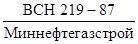
«Проектирование и строительство автомобильных дорог
для обустройства нефтяных и газовых месторождений на севере Тюменской области и
в других районах тундры с аналогичными условиями» 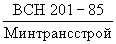
«Нормы проектирования, строительства и содержания
зимних автомобильных дорог на снежном и ледяном покрове в условиях Севера
Сибири и Северо-Востока СССР» 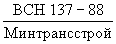
Временный природоохранный регламент строительно-промышленного освоения нефтегазоконденсатных месторождений полуострова Ямал (Мингазпром СССР, 1988 г.);
Эталон раздела «Охрана природы проектов на строительство и реконструкцию предприятий газовой промышленности» (Мингазпром СССР, 1986 г.).
1.3. Под окружающей природной средой понимается вся совокупность природных элементов и их комплексов в зоне полосы строительства и прилегавших к ней территорий.
Целью охраны окружающей среды является исключение или максимальное ограничение вредных воздействий строительства и эксплуатации трубопроводов на эти объекты, рациональное использование природных ресурсов, их восстановление и воспроизводство.
1.4. При проектировании и выполнении мероприятий по охране окружающей среды должны соблюдаться требования «Основ законодательства СССР и союзных республик о недрах», «Основ земельного законодательства СССР и союзных республик», «Основ законодательства СССР и союзных республик об охране вод», «Основ лесного законодательства СССР», Закона СССР «Об охране атмосферного воздуха», Закона СССР «Об охране и использовании животного мира», Закона СССР «Об охране и использовании памятников истории и культуры», а также постановлений ЦК КПСС и Совмина СССР по охране природы и рациональному использованию природных ресурсов в регионе.
1.5. Охрана окружающей среды при строительстве трубопроводов осуществляется путем выполнения природоохранных мероприятий.
К природоохранным мероприятиям относятся все виды хозяйственной деятельности отрасли, направленные на снижение или ликвидацию отрицательного антропогенного воздействия на природную среду, на сохранение, улучшение и рациональное использование природных ресурсов:
опережающая отсыпку автодорог и площадок;
размещение сооружений, строительных баз, обслуживающих объектов и транспортных систем с учетом экологических требований;
развитие малоотходных и безотходных технологических процессов;
повышение надежности газотранспортных систем;
мероприятия по охране водных объектов;
строительство и эксплуатация очистных сооружений и устройств;
уменьшение вредных выбросов в атмосферу и борьба с шумами;
рекультивация земель и меры борьбы с эрозией;
борьба с пожарами или утечками транспортируемого продукта;
меры по охране и воспроизводству ресурсов растительного и животного мира;
применение природосберегающих строительных технологий и специальных машин и механизмов, оказывающих минимальное воздействие на природу;
мероприятия по защите от загрязнения и разрушения геологической среды, в том числе вечномерзлых пород и подземных вод;
мероприятия по охране памятников природы, заповедных зон и др.
1.6. Природоохранные мероприятия при строительстве должны дифференцироваться в соответствии с природными особенностями регионов строительства:
районы распространения вечномерзлых грунтов (минеральные грунты, торф, гидрографическая сеть, гидрология, растительность);
лесные регионы (леса, болота);
пустынные районы (глинистые, песчаные, солончаковые пустыни);
горные районы (тундровые, залесенные, пустынные горы);
долины рек (лесные и луговые поймы, русла рек);
морские и озерные побережья и акватории (участки абразионного размыва побережий, акватории морей и озер);
сельскохозяйственные земли.
1.7. Вечномерзлые грунты в качестве оснований следует использовать в соответствии с требованиями СНиП II-18-76. Основным принципом использования вечномерзлых грунтов в качестве оснований трубопроводов при всех способах прокладки следует принимать такой, при котором вечномерзлые грунты оснований используются в мерзлом состоянии, сохраняемом в процессе строительства и в течение всего периода эксплуатации трубопровода (принцип I).
1.8. Природоохранные мероприятия в лесных районах в первую очередь должны быть направлены на предотвращение возникновения или активизации процессов эрозии, заболачивания.
1.9. Природоохранные мероприятия в пустынных районах должны обеспечить предотвращение возникновения или активизации процессов техногенного опустынивания, пересеивания песков, загрязнения почв и вод строительными и бытовыми отходами, горюче-смазочными материалами.
1.10. В горных районах природоохранные мероприятия должны способствовать ослаблению или предотвращению процессов эрозии, сползания и осыпания грунтов на склонах.
1.11. Природоохранные мероприятия при строительстве переходов через водные преграды (реки, озера, моря) должны быть направлены на недопущение загрязнений и засорения акваторий, размыва берегов, оскудения фауны водоемов, изменения гидрологического режима водотоков.
1.12. Состав природоохранных мероприятий и их стоимость в полной объеме устанавливаются в разделах «Охрана окружающей среды» в технико-экономическом обосновании (ТЭО) или проекте сооружаемого объекта; попикетная привязка природоохранных мероприятий осуществляется в экспликации к профилю трассы.
1.13. Проектная организация несет ответственность за полноту, качество и эффективность разрабатываемых природоохранных мероприятий в соответствии с действующим природоохранным законодательством, строительными нормами и правилами, государственными стандартами, инструкциями министерств и ведомств, устанавливающими правила охраны воздуха, водных и земельных ресурсов, ихтиофауны, растительного и животного мира, лесных ресурсов, здоровья населения, а также в соответствии с международными соглашениями по охране приводы.
1.14. Как правило, природовосстановительные работы должны осуществляться специализированными строительными природоохранными управлениями.
1.15. Контроль за качеством проведения работ по предотвращению техногенного воздействия осуществляется органами по контролю качества строительства.
1.16. Природовосстановительные работы считаются завершенными, если отсутствуют:
участки с невосстановленным растительным покровом;
места, загрязненные нефтью, горюче-смазочными материалами, строительными и бытовыми отходами.
1.17. Строительная организация, осуществляющая прокладку трубопровода или строительство других объектов нефтяной и газовой промышленности, несет ответственность за соблюдение проектных решений по охране окружающей среды перед законом, государственными контрольными органами по охране природы системы Госкомприроды СССР и местными Советами народных депутатов, а также за качество строительных работ и за соблюдение действующих нормативов на производство работ.
Предписания органов Госкомприроды СССР подлежат безусловному выполнению строительными организациями.
1.18. Контроль за соблюдением при строительстве природоохранных требований осуществляется подразделениями службы охраны природы Миннефтегазстроя.
2.1. Основные мероприятия по охране окружающей среды на трассах трубопроводов и территориях газовых и нефтяных месторождений должны разрабатываться на основе инженерных изысканий и материалов опережавших комплексных исследований природной обстановки осваиваемых территорий.
2.2. Материалы опережающих комплексных исследований природной обстановки на трассах трубопроводов и территориях месторождений должны содержать данные по инженерно-геологическим, геокриологическим, гидрогеологическим, ландшафтным и экологическим характеристикам и дополняться данными режимных наблюдений на опытных полигонах, выполняемых с целью количественной оценки факторов формирования, интенсивности развития и масштабов возможного проявления криогенных процессов на различных ландшафтах.
2.3. Материалы инженерно-геологических и геокриологических изысканий должны включать:
данные о геокриологических условиях вдоль трасс и на площадках обустройства;
результаты полевых и лабораторных исследований мерзлых грунтов;
исходные данные для прогнозирования возможных изменений мерзлотных и гидрогеологических условий на осваиваемой территории;
исходные данные и требования, необходимые для разработки природоохранных мероприятий в техническом проекте и проекте организации строительства трубопроводов.
2.4. Ландшафтные и экологические материалы изысканий должны содержать:
данные о естественном растительном и почвенном покровах, рельефе;
данные о положении уровня грунтовых вод, гидрографической сети;
схемы расположения естественной дренажной сети, включая временные водотоки и дренирующие территорию ложбины без поверхностного (открытого) стока;
материалы о существующих техногенных нарушениях экосистем, их характеристики;
материалы о распространении растительных и животных видов в районе строительства.
2.5. Наблюдения и экспериментальные исследования на опытных площадках и полигонах должны проводиться на всех стадиях освоения территории (изыскания, проектирования, строительства, эксплуатации, ремонта и др.) с целью определения:
природно-климатических характеристик регионов (при кратковременных наблюдениях - в соответствии с требованиями СНиП 1.02.07-87);
количественного влияния элементов естественной природной обстановки на инженерно-геокриологические характеристики территории - динамику сезонного промерзания и протаивания грунтов, динамику температурного поля вечномерзлых грунтов, склоновые процессы, криогенные процессы;
типов и интенсивности естественных процессов рельефообразования, появляющихся или активизирующихся вследствие строительства;
влияния техногенных воздействий (снятие растительного покрова, отсыпка дорожного полотна, прохождение транспорта и т.п.) на изменение инженерно-геокриологических и ландшафтных характеристик, на условия обитания и воспроизводства животных и растительных видов;
возможности естественного зарастания нарушенных участков после окончания строительства.
2.6. Под техногенными нарушениями природной обстановки следует понимать результаты инженерной деятельности человека на осваиваемой территории, проявляющиеся в изменениях качественного состава атмосферного воздуха, растительного и животного мира, почвенного и снежного покрова, в отсыпке и срезке грунтов, возведении наземных сооружений, укладке трубопроводов, устройстве карьеров, отвода водотоков, устройстве искусственных покрытий, в организованных и неорганизованных выбросах загрязняющих веществ.
2.7. Оценку воздействия техногенных факторов на природную обстановку следует проводить с учетом:
состава и свойств грунтов в природном залегании;
толщины и плотности снежного покрова, режима его накопления, теплофизических свойств;
характеристики растительного и напочвенного покрова и их тепло- и массообменных свойств;
степени заболоченности и обводненности территории;
распределения температуры грунта по глубине;
наличия подземных и полигонально-жильных льдов;
развития на проектируемой трассе рельефообразующих (криогенных, эрозии, перевеивания песков и др.) процессов;
состава, численности растительных и животных видов, биопродуктивности экосистем.
2.8. Прогноз изменения природных условий должен осуществляться на весь период строительства и эксплуатации трубопроводов и других объектов нефтегазового комплекса в соответствии с требованиями СНиП II-18-76.
2.9. Прогноз изменения природной обстановки в результате строительства трубопроводов и обустройства газовых и нефтяных месторождений должен устанавливать:
направление и величину возможных изменений температурного режима вечномерзлых грунтов в результате строительства и температурного воздействия трубопровода в период эксплуатации;
степень увеличения или уменьшения глубины сезонного протаивания и промерзания грунтов;
изменения гидрогеологических и гидрологических условий территорий в результате производства земляных работ, включая возможные пути разгрузки поверхностных и надмерзлотных вод по траншее и, наоборот, возможность заболачивания территории;
степень активизации криогенных процессов, и в первую очередь осадки и пучения грунтов;
возможность возникновения, степень активизации водной и ветровой эрозии, склоновых процессов, заболачивания;
характеристики естественного заращивания территории, нарушенной строительством;
масштабы и степень обратимости техногенного опустынивания вследствие строительства;
интенсивность и размеры нарушения почвенно-растительных комплексов;
возможные нарушения в естественной миграции животных;
степень риска уничтожения отдельных биопопуляций и сокращения отдельных биологических видов в границах осваиваемого территориального комплекса;
изменения в качественном и количественной составе ареалов распространения растительных и животных видов;
возможность соблюдения установленных нормативов выбросов вредных веществ в атмосферу и сточных вод в водные объекты.
2.10. При инженерных изысканиях необходимо выделять участки, требующие выполнения интенсивных природоохранных мероприятий:
лишайниковые тундры;
склоны крутизной свыше 3° (на вечномерзлых грунтах) и 5° (на талых грунтах);
все поверхностные водотоки и дренирующие территорию понижения, каналы стока надмерзлотных вод;
болота всех типов;
бугры пучения, участки распространения жильных льдов, криопегов, полигональных почв;
участки развития водной и ветровой эрозии, термокарста;
оползнеопасные склоны;
районы распространения песчаных грунтов;
размываемые (абразионные) побережья;
зоны периодической осушки акваторий;
земли сельскохозяйственного назначения, в том числе пашни.
2.11. В процессе инженерных изысканий в северных районах должны быть определены места залегания крупных торфяников, пригодных для разработки с целью заготовки торфа для рекультивации нарушенных территорий и теплоизоляции нарушенных поверхностей, подстилаемых льдистыми вечномерзлыми грунтами.
3.1. Основные мероприятия по охране окружающей среды при строительстве трубопроводов и объектов обустройства разрабатываются на стадии технико-экономического обоснования расходов.
3.2. Рабочий проект (проект) на сооружение объектов нефтяной и газовой промышленности должны включать отдельный раздел «Охрана окружающей среды». Состав и содержание раздела рабочего проекта по охране окружающей среды установлены СНиП 1.02.01-85, приложение 4.
В составе рабочего проекта (проекта) разрабатывается ведомость сметной стоимости объектов и работ по охране окружающей среды.
3.3. Ведомость сметной стоимости объектов и работ по охране окружающей природной среды составляется в соответствии со СНиП 1.02.01-85 по форме № 8 (приложение 16, обязательное).
3.4. В состав раздела «Охрана окружающей среды» рабочего проекта в соответствии со СНиП 1.02.01-85 включаются следующие материалы по охране атмосферного воздуха:
исходные данные для разработки решений по предотвращению загрязнения атмосферного воздуха - климат, роза ветров, зона загрязнения, виды флоры и фауны, подверженные воздействию выбросов, наличие заповедников, заказников, памятников природы и др.;
краткая характеристика физико-географических условий района строительства с учетом местных особенностей;
сведения о существующих фоновых концентрациях вредных веществ в атмосферном воздухе;
перечень источников выбросов;
наименование выбрасываемых загрязняющих веществ, в том числе с суммирующимися вредными воздействиями;
количественные и качественные характеристики выбрасываемых веществ, в том числе возможных аварийных выбросов;
результаты расчета приземных концентраций, анализ и предложения по предельно допустимым выбросам и временно согласованным выбросам;
обоснование решений по предотвращению (сокращению) образования и выделения загрязняющих атмосферу веществ и выбору оборудования, аппаратуры для очистки выбросов в атмосферу;
сравнение принимаемых в проекте решений с передовым опытом по очистке вредных выбросов;
сведения о сметной стоимости объектов и работ, связанных с осуществлением воздухоохранных мероприятий;
решения по снижению производственных шумов и вибраций;
оценка эффективности намечаемых и проектируемых сооружений и устройств;
ситуационная карта-схема района размещения сооружения и указанием на ней границ санитарно-защитной зоны и местоположения расчетных точек;
генеральный план, на котором показано расположение источников выбросов загрязняющих веществ в атмосферу и устройств по очистке этих выбросов;
карты-схемы - сводные таблицы с результатами расчетов загрязнения атмосферы при неблагоприятных погодных условиях и выбросов по веществам и комбинациям веществ с суммирующимися вредными воздействиями на все объекты окружающей природной среды.
Объекты и содержание проектных материалов данного подраздела устанавливаются с учетом требований ГОСТ 17.2.3.02-78.
3.5. В состав раздела «Охрана окружающей среды» на стадии технико-экономического обоснования, а затем рабочего проекта в соответствии со СНиП 1.02.01-85 включаются следующие материалы по охране рек, водоемов от загрязнения производственными и бытовыми отходами:
исходные данные и сведения, выдаваемые органами Госкомприроды СССР, исполкомов Советов народных депутатов, санитарно-эпидемиологической службой, органами Минводхоза СССР, Минрыбхоза СССР, характеризующие естественное состояние водоемов, используемых предприятиями и сооружениями;
решения по предотвращению травмирования и гибели рыбы на оголовках водозаборов;
решения по очистке потребляемых природных вод;
обоснование решений по оборотному водоснабжению;
сведения о количестве сточных вод (приводятся по отдельным сооружениям);
баланс водопотребления и водоотведения в целом и по основным производственным процессам;
характеристика сточных вод;
обоснование принимаемых проектных решений по очистке сточных вод и утилизации обезвреженных элементов;
предложения по предотвращению аварийных сбросов сточных вод, по предельно допустимым и временно согласованным сбросам сточных вод;
решения по повторно-последовательному использованию воды;
решения по предупреждению загрязнения рыбохозяйственных водоемов при проведении лесосплавных, гидромеханизированных, взрывных и других работ, сохранению естественного состояния водоемов, в том числе по наиболее эффективным решениям переходов трубопроводов через водные объекты;
оценка эффективности намечаемых мероприятий и проектируемых сооружений по рациональному использованию и охране вод и рыбных запасов;
компенсационные мероприятия по восстановлению рыбных запасов, рыбозащитные мероприятия;
данные о затратах по осуществлению этих мероприятий.
3.6. В состав раздела «Охрана окружающей среды» рабочего проекта включаются следующие материалы по восстановлению (рекультивации) земель, охране недр, растительного и животного мира;
выполнение стандартных физико-химических анализов каждой почвенной разности для определения степени кислотности почв (рН), подбора видов удобрений и видов растений для рекультивации;
обоснование способов снятия и хранения плодородного слоя, транспортировка его к месту укладки (или временного хранения) и нанесение на восстанавливаемый земельный участок;
проектные решения по восстановлению земельного участка и приведению его в состояние, пригодное для использования по назначению, устройству инженерных сетей и коммуникаций, дренажа и планировки;
проектные решения по предотвращению возникновения или активизации неблагоприятных рельефообразующих процессов (водная и ветровая эрозия, термоденудационные процессы, осыпание, обваливание, оползание, оплывание склонов, заболачивание);
проектные решения по восстановлению существовавшей до начала строительства системы естественного стока;
данные об объемах отходов производства, перечень мероприятий по их переработке и утилизации для получения полезной продукции, транспортировки этих отходов на переработку, складирование и др.;
сведения о необходимых мероприятиях по охране недр и сохранению среды обитания животных и путей их миграции, количественного и качественного состава животных и сроках выполнения этих мероприятий;
данные о капитальных затратах, связанных с восстановлением земельного участка, охраной недр и животного мира;
оценка эффективности предусматриваемых мероприятий и сведения о сметной стоимости этих работ;
план рекультивируемого земельного участка с планировочными данными и нанесенными на нем проектируемыми сооружениями, коммуникациями и другие чертежи, позволяющие определить объемы строительных и монтажных работ, а также сметную стоимость.
Состав проектной документации по рекультивации земельного участка, охране недр и животного мира определяется с учетом требований общесоюзных, ведомственных и республиканских нормативных актов.
3.7. При выборе трасс и площадок в зоне вечномерзлых грунтов под сооружения следует избегать участков с широким распространением бугров пучения, бугристых торфяников, с полигонально-жильными и пластовыми льдами, а также участков, вплотную прилегающих к существующим, даже задернованным оврагам, особенно к их верховьям.
3.8. При проектировании и сооружении нефтегазовых объектов в зоне тундры и лесотундры следует избегать солифлюкционных склонов крутизной свыше 3°, сложенных сильнольдистыми грунтами.
Наиболее благоприятны для строительства дренированные ровные участки или пологие склоны с малольдистыми грунтами.
3.9. При выборе трасс и площадок в лесной зоне, горных условиях, на эрозионно-опасных, оползневых склонах следует предусматривать проведение опережающих противоэрозионных и противооползневых мероприятий.
3.10. При проектировании нефтегазовых объектов в пустынях, на песчаных, доступных для перевеивания грунтах, следует предусматривать на время строительства пескозакрепительные работы.
3.11. При проектировании во всех регионах строительства необходимо предусматривать опережающее сооружение природоохранных объектов, создание сети обслуживающих строительство автомобильных дорог, проездов и мест стоянок тяжелой строительной техники, а также мероприятия по предотвращению загрязнений окружающей среды строительными, бытовыми отходами и горюче-смазочными материалами.
4.1. К подготовительным работам следует приступать только при наличии положительного заключения экологической экспертизы Госкомприроды СССР по ТЭО или проекту и утверждения их министерством-заказчиком.
При подготовительных работах в пределах зоны вечномерзлых грунтов наибольшие нарушения происходят при расчистке строительной полосы, ее планировке, устройстве временных и постоянных дорог, вдоль трассовых поселков.
К основным видам неблагоприятных воздействий на окружающую среду относятся:
нарушения многолетней мерзлоты, сопровождающиеся процессами термоэрозии, термокарста, солифлюкции, происходящими в местах уничтожения растительности и почв при прохождении транспортных средств;
возникновение пожаров от прохождения транспорта по каменистым лишайниковым тундрам и тайге.
4.2. В период подготовительных работ в лесной зоне наибольшее влияние на окружающую среду оказывается при расчистке строительной полосы, планировке трассы, строительстве водопропускных сооружений.
При расчистке строительной полосы необходимо:
обеспечить вывоз древесины и порубочных остатков;
складировать верхний (гумусовый) слой почвы для последующего его использования при рекультивации.
4.3. При проведении подготовительных работ в пустынях неблагоприятные природные процессы наблюдаются при движении техники вне полосы отвода, вне оборудованных дорог; при отсутствии контроля за осуществлением мероприятий, предотвращающих загрязнения; при нарушении связности верхнего слоя грунтов и целостности растительного покрова; изменении естественного, обладающего устойчивостью к развеиванию рельефа песков.
4.4. В горных условиях подготовительные работы могут оказать неблагоприятные воздействия на окружающую среду при расчистке строительной полосы, при планировке трассы, при строительстве временных и постоянных дорог, при строительстве поселков.
Расчистка строительной полосы, и планировка трассы могут привести в горных условиях к интенсивному развитие водной, ветровой, термической эрозии, оползнеобразованию, обвалообразованию, активизировать процессы солифлюкции, оплывания грунтов, движение осыпей, способствовать развитию карста.
При сооружении поселков в горных условиях возможно загрязнение воздушного бассейна газообразными бытовыми и промышленными отходами, поэтому следует выбирать места для поселка за пределами горных котловин, лишенных регулярного воздухообмена с окружающими территориями.
4.5. Проведение подготовительных работ на побережьях водных объектов может вызвать загрязнение и замутнение акваторий морей, рек; запруживание небольших рек и ручьев, сопровождающееся подтоплением, заболачиванием и затоплением участков долин в верхнем бьефе.
4.6. Службами охраны окружающей среды Миннефтегазстроя должен быть организован контроль за проездом транспорта вне дорог в бесснежное время и сохранностью почвенно-растительного покрова вокруг промплощадок.
4.7. Все подготовительные работы на трассах северных трубопроводов и промплощадок промысловых объектов должны выполняться в зимнее время года после установления снежного покрова и промерзания слоя сезонного протаивания на глубину, исключающую разрушение мохово-растительного покрова строительной техникой (0,2 - 0,3 м).
4.8. Круглогодичное движение транспортной и строительной техники допускается только по постоянным дорогам, а в зимний период, кроме того, - по специально подготовленным зимним технологическим дорогам (автозимникам).
4.9. Зимние технологические и подъездные дороги должны обеспечивать в течение зимнего строительства пропуск тяжелых транспортных средств с нагрузками НК-80 (колесная) и НГ-60 (гусеничная) со строительными грузами и оборудованием, а также проход изоляционно-укладочных колонн общей массой 600 - 800 т.
4.10. При строительстве зимних технологических дорог операции по ускорению промораживания оттаявшего слоя грунтов следует проводить с минимальными нарушениями мохово-растительного покрова. Промораживание плохо замерзающих участков трассы осуществляют путем проминания мохово-растительного покрова гусеничной техникой с давлением на грунт не более 0,25 кгс/см2 и удалением оседающего на полосе отвода снежного покрова.
4.11. Промораживание полосы под зимними технологическими дорогами следует проводить путем проминки и последующего уплотнения снежного покрова при его толщине до 0,3 м до плотности 0,6 г/см3.
4.12. Для продления сроков службы транспортных и специальных зимников толщину снежного дорожного полотна следует наращивать на 20 - 30 см выше высоты снежного покрова в регионе. Наращивание следует вести послойно, по 20 - 30 см, путем уплотнения снежного покрова и полива водой в местах выполаживания уклонов, укладкой лежневок, инвентарных дорожных покрытий.
4.13. Сооружение зимних технологических дорог вдоль трасс
трубопроводов следует проводить в соответствии с 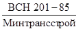
4.14. Для поддержания зимних дорог в рабочем состоянии с целью обеспечения оптимальных скоростей движения транспорта и грузоподъемности необходимо регулярно проводить профилактический ремонт проезжей части. Образовавшиеся колеи следует заполнять снегом с последующим поливом водой.
4.15. При разработке проектов производства работ должны быть предусмотрены мероприятия по защите и очистке дорог и строительной полосы от снегозаносов. Ширина полосы отвода земель по трассе на период строительства должна предусматривать необходимость проведения мероприятий по защите и очистке ее от снегозаносов и складирования снеговых отвалов с противоположной от траншеи стороны.
4.16. При прокладке постоянных дорог и отсыпке площадок под наземные сооружения укладку грунта следует вести методом «от себя», чтобы естественная поверхность и мохово-растительный покров не нарушались колесами или гусеницами транспортных машин, а также с целью дополнительного уплотнения грунта технологическим транспортом.
4.17. На всех без исключения пересечениях полотном дороги ручьев, мочажин, тальвегов, с целью предотвращения подтопления и заболачивания территории и развития термокарста, необходимо устраивать водопропускные сооружения. Площадь сечения водопропускных сооружений следует увеличивать по сравнению с расходом водотока из условия возможности образования наледи с «верховой» стороны насыпи.
Водопропускные сооружения следует устраивать и при пересечении насыпью дороги сухих понижений рельефа (суходолов), которые могут заполняться водой в период снеготаяния.
4.18. Приступать к освоению строительных площадок допускается только при наличии проекта планировки и ПОС, конкретно отражающих все особенности мерзлотных условий и порядок инженерной подготовки. Проект организации строительства должен обязательно предусматривать точные сроки, особенности производства работ и меры по восстановлению поврежденных участков тундры.
4.19. В условиях тундры на участках преимущественного распространения льдистых грунтов планировка территории должна проводиться только подсыпкой с обязательным сохранением мохово-растительного покрова.
4.20. Планировку полосы отвода с целью прохода строительной техники по трассе следует осуществлять в основном путем устройства грунтовых насыпей. Планировка срезкой грунта допускается только на участках линейного строительства с однородными малольдистыми грунтами и хорошим водоотводом. Планировка микрорельефа со срезкой неровностей допускается только по полосе будущей траншеи, на остальной части полосы отвода планировку микрорельефа зимой осуществляют путем формирования уплотненного снежного покрова.
4.21. При планировке полосы отвода на участках с древесной растительностью (в зоне лесотундры и северной тайги) корчевку деревьев и кустарников следует производить только на полосе будущей траншеи. На остальной части полосы отвода срезку деревьев и кустарников следует производить максимально ближе к поверхности грунта, оставляя пни и корневища нетронутыми, с целью уменьшения нарушения температурного режима вечномерзлых грунтов.
4.22. При расчистке строительной полосы необходимо обеспечить рациональное использование древесины и порубочных остатков, разработать в каждом конкретном случае соответствующие мероприятия. Захоронение порубочных остатков следует производить в исключительных случаях в местах с низким уровнем грунтовых вод, за пределами водоохранных зон, на расстоянии не менее 500 м от водотоков, для исключения попадания в них целлюлозы.
4.23. При планировке трассы не следует:
допускать засыпку естественных водотоков всех видов, дренирующих территорию, без строительства водопропускных сооружений;
перегораживать образующиеся в первые недели после проведения планировки эрозионные формы земляными перемычками;
устранять эрозионные процессы при наличии перерыва между подготовительными и земляными работами.
4.24. При отсутствии водопропускных сооружений на небольших водотоках происходит интенсивное обводнение, заболачивание строительной полосы и прилегающих участков.
Необходимо сооружение открытой и закрытой дренажной сети, обеспечивающей функционирование естественной системы стока в параметрах, близких к существовавшим до начала строительства.
4.25. При строительстве дорог в лесной зоне необходимо оборудовать их водопропускными сооружениями и в период строительства обеспечивать контроль за наличием эрозионных процессов, чтобы ликвидировать их в начальных стадиях.
4.26. При строительстве притрассовых поселений в лесной зоне основными природоохранными мероприятиями являются противопожарные меры.
4.27. При проведении подготовительных работ в пустынях необходимо:
всемерно сокращать площадь расчистки строительной полосы;
осуществлять контроль за состоянием притрассовых дорог и проводить ремонтно-восстановительные дорожные работы, исключающие создание подъездных путей, не предусмотренных проектом;
проводить ограждение дорог вблизи населенных пунктов, исключающее движение транспорта вне дорог.
4.28. Уменьшение интенсивности процессов перевеивания грунтов достигается проведением планировки трассы:
перемещением грунта вниз по склону эоловых (созданных ветром) форм рельефа;
проведением планировочных работ на трассе продольными ходами, перпендикулярными песчаным грядам;
проведением планировочных работ на трассе косопродольными ходами, пересекающими гряды под углом;
проведением планировочных работ на трассе, параллельной грядам, на склонах гряд в полувыемке-полунасыпи поперечными ходами;
проведением работ в ячеистых песках радиальными проходами с применением в зависимости от рельефа продольного, косопродольного, косопоперечного, поперечного направления, обеспечивающего уменьшение площадей нарушения при планировке.
4.29. В долях уменьшения площадей нарушаемых участков проведение планировочных работ на песчаных грунтах необходимо осуществлять бульдозером с уширенным ножом или отвалом ящичного типа.
4.30. При строительстве поселков в пустыне вблизи них происходит интенсивная деградация растительного покрова; разрушение верхнего слоя почв на территориях с тяжелыми грунтами и изменение рельефа на участках легких грунтов; в некоторых случаях наблюдается засорение верхних горизонтов почв, загрязнение окрестностей поселков промышленными и бытовыми отходами.
При сооружении поселков в пустынной зоне необходимо:
планировать и сооружать постоянные подъездные пути при одновременном запрете движения всех механических транспортных средств вне их.
4.31. Строительство временных и постоянных дорог в горных условиях должно сопровождаться устройством водопропускных сооружений, мероприятиями, предусмотренными СН 519-79 и СНиП 2.05.06-85 для ликвидации неблагоприятных рельефообразующих процессов.
4.32. Временные запруды водотоков, используемые для движения транспортных средств, должны быть ликвидированы после окончания строительства.
Строительство запруд на водотоках, служащих миграционными путями рыб, а также в период массового нереста не допускается.
5.1. Природоохранные мероприятия должны предусматриваться при выполнении следующих видов земляных работ: разработке траншей; устройстве террас (полок) на склонах, где они необходимы по условиям рельефа; засыпке траншей, котлованов, разработке карьеров; отсыпке дорожного полотна, насыпей и площадок под наземные вооружения, объекты обустройства, городки строителей.
5.2. Основные нарушения окружающей среды при производстве земляных работ в районах распространения вечномерзлых грунтов состоят в:
нарушении элементов первоначального рельефа;
изменении каналов местного поверхностного стока;
нарушении мохово-растительного покрова и изменении температурного режима вечномерзлых грунтов;
активизации необратимых мерзлотных процессов, главным образом термокарста и эрозии.
5.3. В лесных районах строительство объектов нефтяной и газовой промышленности сопровождается следующими нарушениями окружающей среды:
на склонах круче 6°, сложенных глинами, суглинками, супесями, активизируется водная эрозия, происходит оврагообразование;
на участках распространения песков при площади нарушений почв и растительности более 50 м2 активизируется ветровая эрозия (перевеивание);
нарушается система местного стока, интенсифицируется заболачивание.
5.4. В пустынях при проведении земляных работ происходят изменения рельефа, изменяются условия естественного стока.
Изменения естественного рельефа и связности верхнего слоя грунтов приводят на песчаных грунтах:
к перевеиванию;
к дюно- и барханообразованию;
на засоленных грунтах;
к развитию котловин выдувания;
к ветровому выносу солей.
На всех грунтах происходит деградация пастбищ, увеличивается запыленность воздуха при пыльных и песчаных бурях.
При изменении естественного стока увеличивается содержание влаги в грунтах, что сопровождается:
увеличением степени засоления грунтов;
активизацией суффозии (просадочных явлений) засоленных грунтов;
галофитизацией (появлением солелюбивых видов) растительности;
такырообразованием (образованием лишенных растительности глинистых участков);
усилением коррозии трубопровода, увеличивающей опасность загрязнения окружающей среды при аварийном выбросе.
5.5. В горных областях при земляных работах на горных склонах, применении буровзрывных работ при устройстве полок и разработке траншей необходимо обеспечить устойчивость новых склонов, образующихся в ходе работ.
5.6. Разработку траншеи в вечномерзлых грунтах следует производить преимущественно с помощью экскавации грунтов. Разработку траншей взрывным способом допускается производить при наличии согласованной с органами охраны природы проектной документации, чтобы не нарушать места обитания диких животных и птиц, особенно в период появления у них потомства (март - май).
5.7. Разработка карьеров производится при наличии согласования. Разработка карьеров без согласования с местными органами и организациями Госкомприроды СССР не допускается.
При разработке карьеров в вечномерзлых грунтах, предназначенных для засыпки траншей, сооружения дорог и насыпей, необходимо заранее производить заготовку больших объемов грунта с последующим его оттаиванием и осушением.
Заготовка грунта в карьерах производится преимущественно в весенне-летний период путем послойной разработки.
Для оттаивания и осушения сильнольдистых грунтов из добытого в карьере грунта формируются бурты в виде призм высотой 2 - 3 м, от которых должен быть обеспечен отвод воды. В течение летнего периода грунт в буртах следует 1 - 2 раза переместить бульдозерами для его просушки во внутренней части бурта.
Высушенный до оптимальной влажности грунт складируют в отвалы высотой до 10 м. Строительная готовность высушенного грунта определяется лабораторным анализом при достижении оптимальной влажности: песок - 10 - 12 %, суглинок - 17 - 18 %, глина - 20 %.
5.8. Зависимость между объемом фактически добытого (разработанного в карьере) грунта и объемом грунта в плотном теле, пригодного для строительства, можно определить по формуле
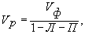
где Л - льдистость мерзлого грунта (в долях единицы) в естественном залегании, определяемая заказчиком при инженерных изысканиях карьеров минеральных грунтов (указывается в проекте);
П - количество пылеватых фракций (в долях единицы) в минеральном грунте в карьере в естественном залегании;
Vф - объем фактически разработанного сильнольдистого мерзлого грунта, м3;
Vp - рабочий объем пригодного для строительства грунта в плотном теле при оптимальной влажности, м3.
5.9. В проектно-сметной документации на земляные работы предусматриваются и подлежат оплате объемы фактически разработанного грунта в карьере в естественном залегании.
5.10. В районах вечномерзлых грунтов наземные сооружения следует строить на насыпях, эстакадах или с применением других современных природосберегающих технологий и технических решений. Насыпи возводят для сохранения температурного режима вечномерзлых грунтов под сооружением.
Перед отсыпкой полотна насыпи площадку следует очистить от снега, если высота снежного покрова более 0,3 м. При меньшей высоте снежного покрова допускается ограничиться уплотнением снега. В зимний период насыпь следует возводить на высоту не менее 0,7 м. Досыпку насыпи до проектных отметок обычно выполняют в летний период. Насыпи, отсыпанные зимой мерзлым грунтом, следует уплотнять после оттаивания грунтов.
При сжатых сроках работ допускается отсыпать насыпь до проектных отметок в зимний период с послойным уплотнением слоями 0,3 - 0,5 м.
5.11. На площадках, сложенных малольдистыми грунтами, как исключение, допускается производить отсыпку насыпи в летний период на ненарушенную поверхность тундры.
Грунт в основание насыпи укладывают слоем не менее 0,5 м, что обеспечивает движение по насыпи технологического транспорта. При укладке последующих слоев грунта в насыпь до проектных отметок в зимний период допускается использование сыпучемерзлых грунтов, заготовленных в летний период, с обязательным уплотнением каждого слоя. Требуемую степень уплотнения получают укаткой бульдозерами или катками и определяют лабораторным путем. Поверхность насыпи должна быть ровной с уклонами к краям в соответствии с п. 3.56 СНиП II-89-80.
5.12. Применяемые для отсыпки насыпи грунты должны быть непучинистыми, обладать высокой прочностью на сжатие и хорошо противостоять морозному выветриванию.
5.13. Высота насыпи определяется в проекте на основании теплотехнического расчета из условия, чтобы верхняя граница вечномерзлых грунтов сохранялась на тем же уровне, который существовал до отсыпки насыпи. Тем самым обеспечивается устойчивость насыпи.
5.14. Предохранение естественного основания под насыпью от протаивания на наиболее опасных участках с сильнольдистыми грунтами и на неподтаиваемых площадках следует производить путем теплоизоляции откосов мхом или торфом. Заготовка торфа производится в отведенных заранее местах (месторождениях торфа толщиной в несколько метров). Укладка теплоизоляции должна быть закончена до начала оттаивания грунтов.
5.15. Для сокращения объемов работ при отсыпке насыпи допускается укладка в ее основании различных теплоизоляционных материалов. Теплоизоляцию следует укладывать на мерзлый грунт. Толщина слоя теплоизоляции определяется в проекте теплотехническими расчетами.
5.16. Нижнюю часть основания насыпи допускается отсыпать послойно из мерзлых комковатых грунтов с толщиной слоя, равной среднему размеру мерзлых комьев или превышающий их на 5 - 10 см, но не более 0,5 м. В этом случае последующие слои надлежит отсыпать из заранее заготовленных грунтов с оптимальной влажностью.
5.17. При выполнении обратной засыпки траншеи после укладки трубопровода следует использовать добытый и осушенный в карьере песчаный грунт, особенно на участках с сильнольдистыми грунтами, которые после экскавации теряют при протаивании значительную часть своего объема.
5.18. В лесной зоне на склонах круче 6° процессы водной эрозии нейтрализуются:
засыпкой эрозионных форм грунтами, строительными отходами;
засыпкой эрозионных форм грунтами и порубочными остатками;
сооружением в днищах эрозионных форм заграждений из металлических сеток, кольев, плетней для задержания твердого стока в дождливый период;
посадкой быстрорастущих злаков (мятлик луговой, длиннокорневищные хвощи), кустарников (ивы, шиповник), деревьев (ольха черная);
мероприятиями, предусмотренными в СНиП 2.05.06-85.
5.19. Ослабление ветровой эрозии в лесной зоне достигается покрытием нарушенных участков слоем торфа толщиной не менее 0,05 м с последующим высевом злаков.
5.20. Для восстановления существовавшей до начала строительства системы местного стока следует обеспечить расчистку русел водотоков, ложбин временного стока от грунта, попадающего в них во время земляных работ.
5.21. В пустынях при проведении земляных работ необходимо учитывать, что:
разработку траншей вперевеиваемых песках следует вести с заделом не более чем на одну смену, в увязке с движением изоляционно-укладочной колонны;
засыпку трубопровода в перевеиваемых песчаных массивах необходимо проводить таким образом, чтобы рельеф песков после строительства как можно меньше отличался от существовавшего до начала строительных работ;
послестроительная планировка на песчаных грунтах исключается на суглинистых и глинистых грунтах проводится для уменьшения высоты и сглаживания неровностей валика над трубой.
5.22. В горных областях необходимы природоохранные мероприятия:
устройство полок с внешними и внутренними откосами крутизной меньше, чем угол внутреннего трения грунтов, слагающих горный склон;
устройство кюветов под внутренним откосом полки с обязательным сооружением водопропускных устройств из кювета в естественные каналы стока;
укрепление механическими заграждениями участков склонов (в соответствии со СНиП 2.05.06-35, СН 519-70), нарушенных при анкеровке бульдозерами или другими механизмами земляной техники.
6.1. Мероприятия по охране окружающей среды при всех видах строительно-монтажных работ следует выполнять в соответствии с проектом производства работ (ППР), составляемым строительной организацией на основе проекта организации строительства и согласования с местными органами охраны природы.
6.2. С целью уменьшения нарушений окружающей среды все строительно-монтажные работы должны проводиться исключительно в пределах полосы отвода.
За нарушение окружающей среды (разрушение почвенно-растительного покрова, загрязнение водоемов, допущение пожаров торфяников и др.) вне пределов полосы отвода несут персональную дисциплинарную административную, материальную и уголовную ответственность производители работ и лица, непосредственно нанесшие урон окружающей среде.
6.3. Линейные строительно-монтажные работы на трассах трубопроводов в зоне вечномерзлых грунтов следует вести только в зимний строительный сезон при промерзании оттаявшего летом слоя на глубину, исключающую разрушение мохово-растительного покрова строительной техникой и обеспечивающую прохождение ее вдоль трассы, или до полного промерзания сезонного оттаивания.
6.4. На всех этапах строительства следует выполнять мероприятия, предотвращающие:
развитие неблагоприятных рельефообразующих процессов;
изменение естественного поверхностного стока на участке строительства;
загорание естественной растительности и торфяников, вследствие допуска к работе неисправных технических средств, способных вызвать загорание;
захламление территории строительными отходами;
разлив горюче-смазочных материалов, слив на трассе отработанных масел и т.п.;
нерегламентируемую охоту, рыбную ловлю и браконьерство.
6.5. Термокарстовые образования на трассе следует засыпать мерзлым грунтом из карьеров, не дожидаясь окончания строительства и общей рекультивации территории.
6.6. Для борьбы с термоэрозией и оврагообразованием следует применять засыпки с использованием крупнообломочных строительных отходов, нетканых синтетических материалов и других способов, предотвращающих или резко уменьшающих вынос грунтового материала.
6.7. При прокладке трубопроводов по солифлюкционным и термоэрозионноопасным склонам крутизной более 5° должны выполняться предусмотренные проектом специальные инженерные решения по предотвращению техногенных нарушений поверхности и развитию криогенных процессов:
устройство глиняных замков с применением нетканых синтетических материалов (геотекстиля);
отвод поверхностных вод в сторону от траншей;
химическое закрепление грунтов;
террасирование и залужение нарушенных участков склона.
6.8. Запрещается планировка и урезка крутых склонов на трассе в северных районах из-за возможности деградации вечномерзлых грунтов и развития теплоэрозии, активно протекающей на склонах с крутизной более 3°.
6.9. Для складирования труб и организации сварочных баз следует выбирать участки с малольдистыми грунтами на удалении от рек и озер за пределами оленьих пастбищ и путей миграции животных.
При льдистости больше 0,1 устраивается насыпь высотой до 1,0 м для предотвращения протаивания и просадок грунта. К территории сварочных баз и складов труб устраиваются постоянные дороги не ниже технических категорий III-П и IV-П.
6.10. Развозку труб по трассе во всех регионах строительства следует осуществлять по постоянным маршрутам, согласованным с местными органами охраны природы, предпочтительно за пределами вдольтрассовой дороги, для уменьшения техногенных нагрузок на полосу отвода, на которую через определенные интервалы устраивают съезды. Указанное мероприятие необходимо для уменьшения нарушений окружающей среды на полосе строительства.
6.11. Дополнительно к требованиям по охране окружающей среды, изложенным в СНиП III-42-80, с целью уменьшения отрицательного воздействия строительства на окружающую среду, следует широко применять укрупнение и повышение технологической готовности конструкций и материалов, в том числе:
проведение в базовых условиях преимущественно в летний период работ по сварке и сплошной изоляции трубных секций;
подготовку и герметизацию кромок труб под сварку неповоротных стыков;
монтаж, изоляцию линейных крановых узлов и задвижек, узлов подключения КС и НС;
очистку и защиту внутренней полости трубных секций и оборудования от попадания снега, грунта и грязи;
проведение предварительных гидравлических испытаний линейных крановых узлов и других работ.
6.12. При демонтаже сварочных, изолировочных баз и складов труб вся занимавшаяся ими территория подлежит рекультивации.
6.13. При производстве сварочных работ и разогреве труб горелками открытого огня на участках торфяников следует применять дополнительные меры пожарной безопасности: инвентарные металлические поддоны на постах сварщиков и под горелками, особенно в бесснежный период. Строительная колонна должна быть оснащена эффективными средствами пожаротушения, а возможные возгорания торфа необходимо немедленно ликвидировать.
6.14. Строительная колонна должна быть оснащена передвижным оборудованием - мусоросборниками для сбора, строительных отходов и мусора на трассе и емкостями для сбора отработанных горюче-смазочных материалов. Ответственность за проведение работ по сбору строительных отходов и ГСМ возлагается на начальника колонны.
7.1. Требования по охране окружающей среды, изложенные в данном разделе, должны учитываться при сооружении подводных переходов трубопроводов любого назначения.
Эти требования распространяются на все участки рек и водоемы различной категории, имеющие водо- рыбохозяйственное значение, где предусматриваются подводно-технические (в том числе земляные) работы на переходах.
7.2. При проектировании, строительстве и эксплуатации
подводных переходов трубопроводов в целях обеспечения природоохранных
требований необходимо руководствоваться действующими общесоюзными и отраслевыми
нормативами; 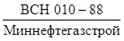 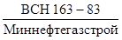
7.3. Проект подводного перехода через реки должен содержать:
материалы о рыбохозяйственных, биологических и гидроморфологических условиях в зоне сооружаемого перехода;
полную информацию о возможных нарушениях и потерях природных, в том числе рыбных ресурсов;
мероприятия по учету требований, предъявляемых к качеству воды в водоемах;
предложения по организации и срокам производства работ;
перечень мероприятий, направленных на сохранение условий естественного воспроизводства рыбных запасов и компенсационные мероприятия.
7.4. Проектные решения по производству дноуглубительных и других подводно-технических работ, в том числе решения, приводящие к изменению гидрологических и рыбохозяйственных условий, должны согласовываться с органами Госкомприроды СССР или с соответствующими территориальными подразделениями Минрыбхоза СССР.
7.5. Перечень данных, представляемых на согласование в
органы рыбоохраны в составе намечаемых решений на подводном переходе
трубопровода, устанавливается требованиями «Указаний о порядке рассмотрения и
согласования органами рыбоохраны намечаемых решений и проектной документации на
строительство предприятий, зданий и сооружений» 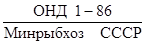
7.6. При сооружении подводных трубопроводов через реки и водоемы, имеющие рыбохозяйственное значение, проектные и строительные организации обязаны по согласованию с органами рыбоохраны предусматривать в проектах и сметах и осуществлять при строительстве мероприятия по сохранению и восстановлению рыбных запасов.
7.7. Работы по оценки влияния на рыбохозяйственные водоемы и рыбные запасы строительства подводных трубопроводов выполняются рыбохозяйственными научно-исследовательскими и проектными организациями, а также бассейновыми управлениями Главрыбвода, расположенными в соответствующих регионах страны. Контроль за выполнением рыбоводных компенсационных мероприятий выполняется с учетом требований, утвержденных Минрыбхозом СССР.
7.8. Природоохранные меры следует проводить с опережением основных работ по строительству перехода.
7.9. К факторам воздействия на окружающую среду, способным вызывать локальные экологические изменения и нарушения в зонах строительства подводных переходов, относятся: механическое, тепловое, физико-химическое и биологическое воздействие на грунты, речную фауну и флору.
7.10. Воздействие на окружающую среду на русловых, пойменных и береговых участках может наблюдаться практически при всех производственных процессах, выполняемых на переходах:
а) при подготовительных работах - строительство подъездных дорог, переездов через водные преграды, дамб, съездов к реке, причалов, насыпных (или намывных) строительных площадок;
б) при транспортных и монтажных работах - движение строительной (колесной и гусеничной) техники при доставке труб, стройматериалов, пригрузов, топлива и другие работы на стройплощадке; размещение и эксплуатация береговых стендов для монтажа, сварки, изоляции и балластировки секций или плетей трубопроводов, оснащение плетей трубопроводов в створе строящегося перехода грузами и понтонами;
в) при земляных работах на русловых, береговых и поименных участках переходов - рыхление вечномерзлого грунта взрывами; разработка траншей наземными и плавучими средствами в подводные и береговые отвалы;
г) при берегоукрепительных работах - срезка и удаление растительности и верхних слоев талого грунта бульдозерами, разрушение коренных берегов в границах траншей, засыпка котлованов, крепление откосов;
д) при гидравлическом испытании плетей трубопроводов - слив загрязненной воды в водоемы или котлованы, устройство грунтовых ограждающих перемычек, ликвидационные работы на участке.
7.11. Последствиями воздействия указанных работ на окружающую среду являются:
механическое разрушение почвенно-растительного слоя грунта в границах береговых траншей и полосы отвода, возникновение и активизация русловых процессов и эрозия склоновых участков;
загрязнение поверхностных грунтов на береговых участках отходами нефтепродуктов от работающих транспортно-строительных механизмов и хозяйственно-бытовыми отходами;
загрязнение водной среды разрабатываемым грунтом, нефтепродуктами, хозяйственно-бытовыми отходами;
уничтожение ихтиофауны при подводных взрывах и работе земснарядов, при сбросе разрабатываемого земснарядами грунта в воду, а также повреждение или сокращение (временное) кормовых растительных запасов на пойменных и русловых участках;
ухудшение условий обитания ихтиофауны в зоне строительства подводных трубопроводов: ограничение миграции рыб, разрушение или сокращение нерестилищ, зимовальных ям и зон обитания и нагула рыб, образование зон повышенной мутности в воде в результате увеличения предельно допустимой концентрации (ПДК) взвесей, ухудшение качества воды и снижение биологической активности рыб, сокращение их численности.
7.12. Источниками загрязнения водной среды при разработке траншей могут быть:
черпаковые устройства экскаваторов и скреперов в процессе грунтозабора (в забое) и подъема их на поверхность;
грунтозаборные устройства землесосных снарядов, эжекторных устройств, гидромониторов при работе в забое;
пульпопроводы при сбросе пульпы в воду - в траншеи или подводные отвалы;
береговые отвалы (карты) грунта, намываемого землесосными снарядами, в результате стока воды в реку.
7.13. Технология, объемы работ и период их выполнения на
переходе (зимой, летом) определяются проектом, предусматривающим
соответствующее технико-экономическое и экологическое обоснование. Решения,
предусмотренные проектом, должны быть согласованы с органами рыбоохраны
(согласно 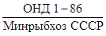
7.14. Способы, средства и методы применяемой природосберегающей технологии, используемой при сооружении переходов, должны определяться видом работ, сроками и средствами их выполнения в каждом конкретном случае.
7.15. На пути движения и в зоне работы транспорта и строительной техники на берегах рек не разрешается слив нефтепродуктов и других производственных и бытовых отходов.
Необходимо указывать места и устраивать емкости для складирования, переработки, сжигания или захоронения загрязняющих веществ (отходов), устраиваемые вне водоохранной зоны по согласованию с органами Госкомприроды и Минздрава СССР.
7.16. Для сохранения вечномерзлых грунтов от разрушения строительство оснований дорог, подъездов, околопричальных территорий следует выполнять преимущественно гидронамывом грунта на берег малыми землесосными снарядами.
7.17. Строительство указанных сооружений в зоне вечномерзлых грунтов с использованием земснарядов следует выполнять в период до начала промерзания сезоннооттаивающего поверхностного слоя грунта.
7.18. В целях исключения потенциальных источников загрязнения вблизи реки, в проекте перехода должны разрабатываться и при строительстве осуществляться меры по утилизации или захоронению отходов строительства, испытаний трубопроводов, нефтепродуктов.
7.19. Выбор механизмов для разработки, организации дночерпательных работ, порядок складирования грунта, сроки разработки подводной траншеи должны обеспечивать минимальные нарушения условий существования ихтиофауны и согласовываться строительной организацией с органами рыбоохраны.
7.20. Намыв землесосным снарядом оснований на берегу (причалы, площадки) целесообразно выполнять струйным способом или по пульпопроводу.
7.21. Наименьшее загрязнение водной среды грунтом создают плавучие черпаковые (ковшовые) механизмы из-за малых потерь (просора) грунта в воду. Их работа допускается только в летний период, с воды.
7.22. Работа скреперных установок и экскаваторов допускается с берега только в зимний период. Использование этой техники в летний период возможно при ее расположении и перемещении на предварительно намытой площадке.
7.23. Разработку подводных траншей необходимо начинать землесосными снарядами в летне-осенний период со складирования грунта в береговые или в подводные (по согласованию с органами рыбоохраны) отвалы или траншеи. Это сократит или совсем исключит объем разработки в зимний, мало благоприятный для гидрофауны период.
7.24. Для предупреждения значительных разрушений откосов траншей и их оплывания под воздействием грунтовой или речной воды необходимо до минимума сокращать время разработки траншей и их простаивание перед укладкой в нее трубопроводов. Сроки и технологию разработки траншей необходимо выбирать, исходя из конкретных мерзлотно-гидрогеологических условий участка реки.
7.25. Намыв грунта на берег должен исключать растекание и обратный слив воды в реку. В качестве защиты в этом случае необходимо делать обвалование вокруг карты намыва. Для удаления зоны с карты в реку необходимо устраивать сбросный колодец и водоотводящий трубопровод.
7.26. Выбор места складирования грунта под воду согласовывается на стадии разработки проекта (см. п. 7.16) и уточняется в деталях перед началом строительства перехода, при условии дополнительных согласований со всеми заинтересованными организациями.
7.27. На реках, имеющих рыбохозяйственное значение, разработку траншей зимой со сбросом грунта под воду необходимо выполнять только при наличии глубины подо льдом более 3 м и скоростях течения более 0,5 м/с. На малых реках с ледяным покровом сброс грунта под воду при меньших параметрах приведет к образованию больших отвалов, ухудшающих условия передвижения и обитания рыб. В местах расположения нерестилищ, крупных зимовальных ям сброс грунта под воду не допускается.
7.28. При работе малых землесосных снарядов, эжекторных или других установок необходимо применять различные устройства, сокращающие унос грунта вниз по течению как при грунтозаборе, так и при сбросе грунта.
7.29. При работе зимой со льда в целях предотвращения уноса в больших объемах взвешенного грунта потоком подо льдом целесообразно ниже створа перехода устанавливать сетчатые гасители скорости потока (экраны).
7.30. Для всех участков рек, имеющих рыбохозяйственное значение, где предусмотрены разработка и подводное складирование грунта землесосными снарядами, в проекте перехода оценивается зона загрязнения в реке и указывается величина ожидаемого ущерба, который может уточняться, исходя из фактических показателей, устанавливаемых органами рыбоохраны в процессе строительства перехода как без применения, так и с применением водоохранных способов и средств.
7.31. Необходимость и возможность применения взрывных работ на подводных переходах и условия их проведения согласовываются проектной организацией с органами рыбоохраны. В соответствии с требованиями общесоюзного нормативного документа на согласование представляются:
материалы изысканий, подтверждающие невозможность замены взрывных работ другим способом;
общая масса взрывчатого вещества, количество взрывов, масса одновременно взрываемых зарядов, глубина заложения зарядов, расстояние между ними;
расчетные данные по определению радиуса опасной гидроударной волны для рыб и зоны действия сейсмической волны на берегу;
намечаемые способы экранирования в целях снижения воздействия взрывной волны и защиты ихтиофауны.
7.32. Технология взрывных работ с указанием условий взрывания, вида взрывчатых веществ, типа зарядов и других данных согласовывается с органами рыбоохраны и специализированной строительной организацией.
7.33. При буровзрывных работах на переходах через реки органы рыбоохраны осуществляют контроль за соблюдением строителями условий выполнения этих работ с применением способов и средств защиты ихтиофауны.
7.34. Предусмотренные проектом подводные и береговые взрывные работы на переходах необходимо выполнять в период наименьшего скопления промысловых рыб в зоне строительства. Сроки проведения работ согласовываются с органами рыбоохраны применительно к конкретным районам строительства. Согласованию с местными органами рыбоохраны подлежат и работы по рыхлению льда на участках полного промерзания реки и мерзлых линз в руслах малых рек.
7.35. Взрывные работы на реках наносят ущерб ихтиофауне в результате поражающего действия различных параметров гидроударных волн (ГУВ); перепада давления на фронте ГУВ, импульса давления, периода действия волны, длительности зоны разряжения, энергии и форм распространения ГУВ.
7.36. Способы и средства защиты ихтиофауны от воздействия взрывных волн разрабатывает проектная организация индивидуально для каждого случая с включением их в смету и согласовывает с органами рыбоохраны. Строительная организация при разработке ППР на буровзрывные работы осуществляет доработку и привязку рыбоохранных мероприятий к конкретным условиям производства работ.
7.37. Рыбоохранные мероприятия должны предусматривать выполнение технологических приемов, применение усовершенствованных конструкций зарядов и использование локальных средств гашения энергии взрывных волн, отпугивания или удаления рыбы из зоны взрыва.
7.38. Для снижения действия ударных взрывных волн на ихтиофауну допустимо применение:
скважинных зарядов;
короткозамедленного и замедленного взрывания;
взрывания зарядов в наклонных скважинах;
взрывания скважинных зарядов под слоем мягкого грунта.
Условия проведения взрывных работ проектная организация согласовывает с органами рыбоохраны.
7.39. При использовании скважинных зарядов следует применять заряды усовершенствованной конструкции:
с воздушными промежутками в нижней части заряда;
с увеличенной песчаной (или эластичной) забойкой.
7.40. В качестве средств гашения энергии взрывных волн можно устанавливать над устьем взрывной скважины одиночных зарядов: железобетонные плиты, мягкие маты, металлические кожухи и др. При массовом взрыве зарядов для гашения интенсивности взрывных волн могут использоваться воздушно-пузырьковые завесы, воздушно-полостные экраны.
7.41. Для удаления (отпугивания) рыбы из опасной зоны массового взрыва могут применяться группы мелких (до 100 г) зарядов из малобризантных взрывчатых веществ и другие щадящие источники воздействия на рыбу.
7.42. При взрывных работах на реках для оценки ожидаемого ущерба рыбному хозяйству необходимо определить радиус опасной зоны (Rо, м) по действию ГУВ на рыбу. Для зарядов аммонита с песчаной забойкой длиной не менее 4 - 6 диаметров скважины
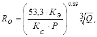
где КЭ - коэффициент пересчета взрывчатых веществ (ВВ), эквивалентных тротилу, при использовании других ВВ;
КС = 7 - 10 - коэффициент снижения величины перепада максимального давления на фронте ГУВ при взрыве скважинных зарядов по сравнению со взрывом свободно подвешенных зарядов той же массы;
Р - допустимое давление на фронте гидроударной волны;
Q - масса заряда, кг.
7.43. При выполнении транспортных, грузовых операций с нефтепродуктами на воде и перекачке их в суда или на берег в хранилище необходимо исключить утечку продуктов в реку и на грунт.
7.44. Очистка загрязненной нефтепродуктами палубы судов и рабочего оборудования струями воды не разрешается.
7.45. Зачистку танков судов следует производить в специально отведенных местах с соблюдением правил, установленных для речного флота.
7.46. При выполнении зачистки танков судов, очистки палубы, скоплении подсланевых вод всю промывочную или загрязненную воду необходимо сливать в специальные, устанавливаемые на судах, емкости, которые опорожняют на берегу в определенных пунктах.
8.1. Мероприятия по охране окружающей среды при очистке полости и испытаниях трубопроводов должны выполнять строительные организации в полном объеме, предусмотренном рабочим проектом, проектом организации строительства, проектом производства работ и специальной, рабочей инструкцией.
8.2. Мероприятия по охране природы, предусмотренные в проектах, должны быть согласованы проектной организацией со службами или отделами вышестоящих по подчиненности организаций, осуществляющих ведомственный контроль за охраной природы. Специальные разрешения на проведение работ на территориях заповедников, заказников, а также вблизи зон санитарной охраны, водозаборных сооружений и населенных пунктов, а также в местах, объявленных в установленном порядке памятниками природы или культуры, должны быть получены от государственных органов по контролю за охраной природы.
8.3. Нежелательными последствиями воздействия процесса испытания трубопровода на окружающую среду могут быть:
изменение характера и снижение биопродуктивности ландшафта в результате локального загрязнения почв;
загрязнение поверхностных или грунтовых вод;
изменение условий местного стока в результате забора воды из малых рек и сброса воды после испытания трубопровода;
в районах распространения вечномерзлых грунтов уничтожение коренных видов растительности (мхов, лишайников) без последующего их восстановления в результате локальных загрязнений территорий продуктами очистки полости трубы;
активизация экзогенных (включая криогенные) геологических процессов (оползней, суффозии, эрозии, термокарста и др.);
загрязнение атмосферы вблизи городов и населенных пунктов;
ухудшение условий обитания ихтиофауны в результате сброса воды из трубопровода в реки и водоемы.
8.4. Ведомственный контроль за планированием и осуществлением мероприятий по охране окружающей среды при очистке полости и испытаниях трубопроводов проводят отделы, службы или должностные лица вышестоящих организаций, ответственных за охрану природы и рациональное природопользование.
8.5. При подготовке трубопровода к проведению очистки полости и испытаний места выпуска воды и продуктов очистки следует располагать на участках с малольдистыми грунтами, не подверженных термокарсту и эрозии из-за изменения условий теплообмена на поверхности, а также на малоценных талых грунтах, не пригодных для хозяйственного использования.
8.6. При очистке полости трубопровода продувкой воздухом или природным газом уменьшить зону загрязнения территории продуктами выброса можно следующими способами:
уменьшением кинетической энергии выбрасываемой струи путем снижения подачи воздуха (газа) в продуваемый участок при подходе поршня на расстояние 1 - 2 км до концевого патрубка;
устройством земляного вала (промороженного зимой или с покрытием из бетонных плит - летом) на пути полета загрязненной струи и очистного поршня;
дождеванием загрязненной воздушной струи из трубы;
продувкой без подъема концевого патрубка из траншеи;
направлением концевого патрубка в специально отрываемую по направлению оси патрубка траншею длиной 20 - 25 м, наполненную водой до уровня нижней образующей патрубка.
8.7. При очистке полости трубопровода промывкой воду следует сливать в специально сооружаемые резервуары-отстойники (амбары) или фильтровать через дамбы-фильтры из хорошо фильтрующего песчаного грунта. При отсутствии в районе песчаных грунтов дамба может быть сооружена из нефильтрующих грунтов*.
* В этом случае отстоявшаяся вода удаляется через водосбросное устройство (например, труба с задвижкой).
Резервуары-отстойники необходимо размещать в местах, исключающих их сообщение с рекой и попадание в нее загрязненной воды.
8.8. Запрещается сброс загрязненной продуктами очистки полости воды непосредственно в реки, водоемы и на территории, затапливаемые при паводках.
8.9. При невозможности устройства резервуара-отстойника, например в горных районах, сброс воды из трубопровода следует осуществлять через песчано-галечниковые дамбы-фильтры у дна долины (тальвега).
8.10. Проектирование и сооружение земляных резервуаров-отстойников необходимо производить из расчета на прием всего объема воды, использованной при промывке. Приближенно объем резервуара-отстойника V для приема промывочной воды можно определить по формуле
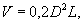
где D, L - диаметр трубопровода и длина промываемого участка, м.
8.11. Резервуары-отстойники для приема удаляемой из трубопровода воды могут быть выполнены одним из следующих способов:
путем устройства дамбы (плотины) или нескольких дамб с водосливными лотками в местах понижения рельефа, а также в головной части оврагов, балок, выработанных карьеров и т.п.;
сооружением поверхностного резервуара в обваловке;
сооружением полузаглубленного резервуара в виде котлована с обваловкой.
Почвенно-растительный слой со дна резервуара должен быть снят и уложен в одну из ограждающих его дамб обваловки для последующего использования при ликвидации отстойника и рекультивации территории.
8.12. Для уменьшения кинетической энергии струи вытекающей из трубопровода воды следует использовать установку водобойной стенки из фундаментных плит на расстоянии 2 - 3 м от конца выбросного патрубка;
изменение направления истечения струи на перпендикулярное ко дну резервуара с укладкой двух - трех бетонных плит в месте удара струи для предотвращения возможных размывов и эрозии;
истечение воды «под уровень» (у дна резервуара).
8.13. На реках глубиной 2 м и менее допускается устройство приямков для забора воды, которые после окончания испытаний должны быть засыпаны. Оголовок водозаборного сооружения должен быть оборудован рыбозащитным устройством, тип и конструкцию которого следует согласовать с органами рыбоохраны.
8.14. При обустройстве мест забора воды, водоотводов, отстойников должны быть приняты меры по сохранению существующего растительного покрова от нарушения механизмами за пределами отведенных для строительства площадей, а также по защите неукрепленных берегов и откосов от размыва вследствие неорганизованного стока.
8.15. В горных районах на крутых склонах опорожнение полости трубы после испытаний и отвод воды должны быть организованы особенно тщательно путем:
выбора места слива на выходах скальных пород;
уменьшения расхода сбрасываемой воды;
устройства бетонных лотков на эрозионно-опасных участках склонов;
защиты ложа водотока из трубы с помощью покрытий из нетканых синтетических материалов (геотекстиля) для предотвращения эрозии;
устройства дамб для очистки воды из гравийно-песчаного материала в нижней части тальвега (долины).
8.16. В целях рационального использования природных ресурсов (чистой воды) необходимо принимать меры для повторного или многократного использования отбираемой воды путем проведения испытаний на соседнем и последующих участках, что достигается:
неукоснительным выполнением согласованного календарного плана-графика подготовки соседних участков для гидравлических испытаний с перепуском воды;
увеличением длины участка трубопровода, сооружаемого одной строительно-монтажной колонной.
8.17. При испытаниях трубопроводов в зимнее время водой с добавлением антифризов (метанола, этиленгликоля, диэтиленгликоля, хлористого кальция и др.), способных нанести ущерб окружающей среде, необходимо предусмотреть методы для сбора, утилизации или ликвидации этих вредных веществ и предотвращения их попадания в водоемы.
Сброс в водные объекты вод, содержащих указанные вещества, запрещен.
Предельно допустимые концентрации антифризов в воде водных объектов различного назначения должны быть не выше указанных в таблице.
Предельно допустимые концентрации антифризов, применяемых для гидравлических испытаний (мг/л)
|
Водоемы, используемые для рыбохозяйственных целей |
Водные объекты хозпитьевого и культурно-бытового пользования |
|
|
Метанол |
0,1 |
3,0 |
|
Этиленгликоль |
0,25 |
1,0 |
|
Диэтиленгликоль |
0,25 |
1,0 |
|
Хлористый кальций |
2,0 - 3,0 |
- |
8.18. При нанесении ущерба сельскохозяйственным угодьям, рыбным и охотничьим хозяйствам, животноводству (оленеводству) в результате загрязнения территории и нарушения окружающей среды определение убытков землепользователей производится в порядке, предусмотренном постановлением Совета Министров РСФСР от 10.11.87 г. «О нормативах стоимости освоения новых земель взамен изымаемых для несельскохозяйственных нужд и о порядке использования средств, предназначенных для возмещения потерь сельскохозяйственного производства».
8.19. При сооружении водоема-отстойника в водопроницаемых (песчаных, супесчаных) грунтах для предотвращения загрязнения продуктами очистки полости, антифризами и нефтепродуктами грунтовых вод, используемых для водоснабжения или стекающих в реку, необходимо проводить гидроизоляцию днища отстойника, например, отсыпкой и уплотнением.
8.20. Накопленные в резервуарах вода и вещества-загрязнители могут быть:
оставлены до полного испарения воды в отстойнике;
вывезены для захоронения после спуска воды в понижения рельефа или захоронены на месте на малоценных, не используемых в сельском хозяйстве землях.
8.21. После окончания всех работ по испытаниям трубопровода все временно занимавшиеся для устройства водозаборов, размещения механизмов, сооружения резервуаров-отстойников и другие земли должны быть в обязательном порядке восстановлены (рекультивированы) в соответствии с проектными решениями по рекультивации земель.
8.22. Нарушения ландшафта с образованием эрозионных форм, размывов и т.д. в процессе испытаний (например, слива воды мощной струей) должны быть полностью ликвидированы, особенно в местах залегания сильнольдистых вечномерзлых грунтов, где такие явления могут иметь необратимый характер.
9.1. После окончания строительно-монтажных работ должна быть проведена рекультивация нарушенных строительством территорий и в первую очередь участков с вечномерзлыми грунтами, с песчаными грунтами в пустынях, оползне- и эрозионно-опасных горных склонов, с целью:
предотвращения или нейтрализации наиболее неблагоприятных процессов: термической, водной и ветровой эрозии, термокарста, солифликции, оползней и др.;
восстановления естественного поверхностного стока и дренажной сети;
сохранения температурного режима вечномерзлых грунтов, близкого к существовавшему до начала строительства;
предотвращения процессов подтопления и заболачивания территории;
восстановления коренной растительности или антропогенных фитоценозов, предотвращения опустынивания;
обеспечения миграции оленей и других животных, сохранения мест обитания местной фауны.
9.2. Рекультивации подлежат:
трассы трубопроводов по всей ширине отвода;
территории временных поселков строителей после их демонтажа;
нарушенные участки поверхности на трассах временных зимних дорог;
карьеры;
территории вокруг наземных сооружений, нарушенные при строительстве;
береговые участки в местах переходов и переходы через малые реки, на которых устроены перемычки для прохода строительной техники;
участки территории, на которых развились эрозионные процессы, овраги, термокарст, солифлюкция и другие мерзлотные процессы;
оленьи пастбища, пути миграции оленьих стад;
любые другие территории в районе строительства, нарушенные в результате прохода транспортных средств, загрязненные производственными и бытовыми отходами, нефтепродуктами и др.
9.3. Основные технические решения по рекультивации земель, технико-экономические показатели и сводные затраты по основным природоохранным объектам и комплексу природоохранных мероприятий должны быть предусмотрены в рабочем проекте и проекте организации строительства.
9.4. Рекультивацию нарушенных земель следует проводить в два этапа:
техническая рекультивация;
биологическая рекультивация.
В условиях Крайнего Севера и из-за ограниченных технических возможностей у землепользователей оба вида рекультивации должны выполнять строительные организации.
9.5. К технической рекультивации участков в зоне распространения вечномерзлых грунтов, нарушенных в результате строительных работ, относятся мероприятия, направленные на восстановление мерзлотных условий, близких к естественным, и локализацию неблагоприятных мерзлотных процессов и явлений.
9.6. Техническая рекультивация северных территорий включает следующие мероприятия:
снятие и складирование мохово-растительного слоя на участках строительства, где это допускается проектом;
заготовку торфа в специальных торфяных карьерах, а также плодородного грунта и транспортировку к месту укладки;
планировку территорий, засыпку эрозионных форм и термокарстовых просадок грунтом с аналогичными физико-химическими и механическими свойствами;
уборку строительного мусора, неизрасходованных материалов, а также всех загрязнителей территорий, оставшихся при демонтаже временных сооружений, поселков, баз после окончания работ на трассе трубопровода и в местах перехода через водные объекты;
восстановление системы естественного или организованного водоотвода, берегоукрепительные работы;
формирование откосов, насыпей и карьеров;
восстановление плодородного слоя почвы.
9.7. Для предотвращения активизации эрозионно-склоновых процессов в лесных и горных регионах строительства на склонах круче 6° при проведении технической рекультивации необходимо:
осуществлять террасирование склонов;
устраивать канавы и лотки, отводящие воду с полосы отвода в естественные каналы стока;
осуществлять мероприятия, изложенные в п. 5.18 настоящих ВСН.
9.8. В пустынных регионах важнейшим видом рекультивационных работ являются предотвращающие перевеивание (противодефляционные) мероприятия.
9.9. Необходимо применять следующие методы противодефляционных мероприятий:
механические;
биологические;
химические (вяжущими веществами);
комбинированные.
9.10. Механические приемы закрепления перевеиваемых грунтов предусматривают:
увеличение расчлененности рельефа путем устройства канав, валиков, валов, уменьшающих энергию ветропесчаного потока и способствующих аккумуляции переносимого ветром потока песка;
устройство механических заграждений из местных материалов (кустарники, кустарнички, злаки), полимерных материалов (полиэтиленовая пленка), цементно-песчаных блоков;
уменьшение подверженности песчаных грунтов выдуванию путем локального изменения их механического состава внесением тонкодисперсных (глинистых и суглинистых) грунтов или вяжущих веществ.
9.11. После завершения засыпки трубопровода и прекращения транспортировки грузов вдоль трассы целесообразно осуществление механических приемов пескозакрепления, направленных на уменьшение ветропесчаного потока на всей полосе отвода и нарушенных участках.
9.12. В местах, где не был восстановлен первоначальный рельеф, следует создавать бульдозерами валы высотой 0,5 - 1,0 м, с шириной по основанию 1,5 - 3,0 м и расстоянием между валами 2,5 - 5,0 м.
9.13. Устройство валов следует дополнять созданием клеточных, устилочных или высокорядных пескозадерживающих заграждений и применением биологических методов рекультивации.
9.14. Клеточную защиту выполняют в виде клеток размером 3´5 м из местных материалов (полыни, камыша, черкеза и др.), заглубляемых на 20 - 25 см в грунт. Высота клеток - 0,25 - 0,30 м. Расход материала до 150 м3/га.
9.15. Устилочные заграждения применяются между нитками трубопровода, трубопроводом и автодорогой. Заграждения выполняются путем выстилания нарушенных песков местными материалами. Расход материала до 75 м3/га.
9.16. Высокорядные стоячие заграждения применяются на выположенных песчаных равнинах. При их устройстве вдоль трассы прокладывают канавы глубиной 0,15 - 0,25 м, в которые заделывается защитный материал (преимущественно тростник) для образования ограды толщиной не менее 0,05 м и высотой 0,7 - 0,8 м. Ограды строят осенью, после выпадения осадков.
9.17. Заграждения из тонкостенных песчано-цементных блоков размером 2000´250´40 мм, скрепляемых между собой замковыми приспособлениями, можно применять на участках, где долговечность заграждений из местных материалов (2 - 3 года) недостаточна для восстановления пескозадерживающей растительности. Заграждения из песчано-цементных блоков могут быть как грядовыми, так и клеточными.
9.18. Строительство заграждений может быть заменено локальными изменениями механического состава грунтов путем устройства в песках, скрепленных глинистым раствором, стенок шириной 0,25 - 0,30 м и высотой 0,3 - 0,5 м с расстоянием между стенками 1,5 - 2,0 м.
9.19. Сооружение заграждений наиболее целесообразно в местах возможного движения транспорта по восстанавливаемым участкам.
9.20. Механические приемы предотвращения дефляции дополняются применением вяжущих веществ (ОФП, САФА, СФ-339, СДБ, ССБ и др.).
9.21. Использование одних вяжущих веществ без комплексирования с механическими и биологическими приемами пескозакрепления оправдано в качестве временной меры, применяемой до начала природовосстановительных работ.
9.22. Основным способом длительного закрепления перевеиваемых грунтов является их заращивание (биологические методы).
9.23. Биологические методы применяют после окончания основных строительных работ и комплексируют с механическими и химическими методами. Биологическую рекультивацию проводят специализированные организации за счет средств, предусмотренных проектом.
9.24. Применение различных видов биологических методов определяется природными особенностями территории и степенью техногенной нарушенности.
9.25. Посадки растений-пескозакрепителей проводят в феврале - марте, до начала активной вегетации растений.
9.26. На бугристых и барханных песках, в междурядьях механических заграждений эффективны посадки джузгуна безлистного. Посадки ведут 1 - 2-летними побегами длиной 60 - 80 см с расстоянием между рядами 4,5 - 6,0 м на глубину 0,5 - 0,6 м.
9.27. В северных районах Прикаспийской низменности, на участках с глубиной залегания грунтовых вод не более 8 - 10 м на перевеиваемых песках можно сажать крупномерные (150 - 200 см) сеянцы и саженцы тополя черного, саксаула и кандыма (джузгуна) на глубину 60 - 70 см. Посадку ведут машиной типа МЛБ-1 и др.
9.28. При залегании грунтовых вод на глубине не более 3 - 5 м и значительном перевеивании возможно использование лоха узколистного.
9.29. При площадных нарушениях песков (до 4 - 6 га) возможна одновременная высадка кустарников (джузгун, терескен) и высев овса песчаного (8 - 10 кг семян на 1 га). Джузгун высаживают двух - трехрядными полосами поперек направления господствующих ветров; терескен - трехрядными полосами между насаждениями джузгуна.
9.30. На плоских перевеиваемых песчаных, супесчаных, суглинистых засоленных равнинах целесообразна высадка под машину СЛН-1 тамарикса (гребенщика), джузгуна, саксаула черного. Посадку производят на глубину 0,35 - 0,45 м на расстоянии между черенками 0,8 - 1,0 м и расстоянии между рядами до 6 м.
9.31. В местах пересечения трубопроводом такыров транзита (с временным стоком) и солончаковых такыров между песчаными массивами строительство может привести к изменению естественного стока. На таких участках следует предусматривать заглубление трубопровода и планировку грунта над ним, достаточные для обеспечения стока, существовавшего до строительства.
9.32. Для предотвращения концентрации переносимых ветром солей и влаги над трубопроводом при его сооружении в солянковых и полынно-солянковых, полынных пустынях следует проводить послестроительную планировку, препятствующую ветровой аккумуляции.
9.33. К мероприятиям по биологической рекультивации в зоне вечномерзлых грунтов относятся:
агротехнические мероприятия по повышению плодородия почв - механизированное внесение минеральных и органических удобрений для восстановления структуры почв, сплошная культивация почвы с целью заделки удобрений и восстановления структуры почв, предпосевное прикатывание для уплотнения почв;
посев семян многолетних растений с целью восстановления естественного или антропогенного растительного покрова.
9.34. При невозможности восстановления коренной растительности на полосе строительства необходимо создать ее искусственные формы, заменяющие естественные, путем посева быстрорастущих видов трав с длинными корневищами (мятлик луговой, мятлик альпийский, войник лапландский, овсяница красная, бескильница Гаупта, вейник Лангсдорфа, щучка северная, лисохвост луговой, лисохвост вздутый, бекманин обыкновенная, волосенец сибирский и др.).
9.35. Главное условие для предотвращения термокарста - сохранение естественного стока, ликвидация препятствий на его пути. Очаги термокарста в виде затопляемых западин следует ликвидировать путем засыпки привозным грунтом в сочетании с биологической рекультивацией.
9.36. Рекультивация эрозионных форм (оврагов, промоин и др.) производится засыпкой местным грунтом слоями до 1 м. В голову оврага следует укладывать эрозионно-устойчивый грунт (глина, крупнозернистый песок, щебень) или строительные отходы.
Верхний слой засыпки выполняют из эрозионно-устойчивого грунта в сочетании с биологической рекультивацией.
9.37. Для создания противоэрозионного травяного покрова в северных районах на рекультивируемый участок (на 1 га) наносят: смесь, содержащую семена многолетних трав, - 30 кг, азотные удобрения - 30 кг, фосфорные удобрения - до 150 кг, калийные удобрения - до 100 кг, мульчирующее вещество СКОП - до 400 кг; в средней полосе объем удобрений следует уменьшить вдвое, в зоне пустынь и полупустынь применять удобрения не рекомендуется.
9.38. Рекультивацию карьеров производят в следующем порядке:
срезка грунтов на участках, загрязненных горюче-смазочными материалами;
снятие растительного покрова и перемещение его в отвалы на участки за пределы территории, затронутой планировкой;
планировка откосов и территории карьера бульдозером;
перемещение слоя растительности из временного отвала и распределение его на поверхности рекультивируемых участков и откосов;
нанесение заготовленной торфо-грунтовой смеси на оставшиеся участки;
посадка быстрорастущих видов трав или посадка кустарников.
9.39. Уклоны откосов карьера в северных районах определяют в зависимости от целей дальнейшего рационального использования территории карьера и мерзлотно-грунтовых условий:
для рекреакции на льдистых участках - 1:20;
для создания сельхозугодий - 1:20;
для прохода и выпаса животных - 1:10;
для создания водоема - 1:5 - 1:10.
9.40. Рекультивацию на территории временных поселков производят в приведенной последовательности:
уборка строительного мусора и вывоз бытовых отходов для утилизации или захоронения;
выдергивание металлических и срезка бетонных свай до уровня грунта;
планировка территории поселка;
планировка откосов насыпей до уклонов 1:10 - 1:20;
покрытие территории торфо-грунтовой смесью;
биологическая рекультивация (посадка трав).
10.1. Категорически запрещается закрепление перевеиваемых песков сырой нефтью, содержащей сероводородные соединения.
10.2. Для уменьшения коррозии, создающий условия для разрыва трубопровода и аварийного выброса содержащей сероводород нефти следует:
применять надземную прокладку трубопровода при прохождении солончаков;
предотвращать застаивание влаги, увеличение увлажненности грунтов в солянковых и полынно-солянковых пустынях путем заглубления трубопровода, послестроительной планировки, строительства водопропускных объектов на руслах пересыхающих водотоков.
10.3. Вблизи населенных пунктов, дорог, временных и постоянных водотоков необходимо создать изолированную от гидрографической сети систему котлованов-приемников, обеспечивающих сбор сероводородной нефти при аварийных выбросах; широко применять способ прокладки трубопровода «труба в трубе».
10.4. Необходимо проводить обваловку трубопроводов на участках возможного попадания нефти в сеть местных временных и постоянных водотоков.
10.5. Необходимо организовать службу сбора, вывозки и захоронения загрязненных вод, грунтов нефтью, содержащей сероводород, из зоны распространения нагонных явлений с Каспийского моря. Для этого:
при невозможности откачки нефти или загрязненных вод и вывозки их в автоцистернах производить обваловку бульдозерами участков разлива нефти;
производить погрузку загрязненного грунта ковшовыми экскаваторами и вывозить автотранспортом в места захоронения;
в качестве мест захоронения должны быть выбраны солончаковые впадины, не связанные с грунтовыми водами и лишенные стока.
10.6. При сооружении дамбы, препятствующей распространению нагонных явлений в глубь побережья на Тенгизском месторождении, для предотвращения катастрофических последствий аварийного вторжения моря через дамбу, сбор и вывоз загрязненных грунтов и вод за пределы зоны нагонных явлений должен осуществляться так же, как и при отсутствии дамбы.
11.1. С целью оценки техногенного воздействия намечаемого строительства нефтегазовых объектов на окружающую среду заказчик производит комплексную социально-экономико-экологическую оценку предполагаемого воздействия сооружения на состояние природной среды на весь период строительства и эксплуатации объекта по альтернативным вариантам.
11.2. Проектная организация (заказчик) несет ответственность за научную обоснованность и достоверность в проектных решениях прогнозной оценки воздействия нефтегазовых объектов на окружающую среду.
11.3. Строительная организация (подрядчик) обязана обеспечить полное и безусловное выполнение проектных решений по охране окружающей среды и несет ответственность за невыполнение проектных решений или отступление от них.
11.4. Для определения экологической обоснованности намеченных проектных решений органами Госкомприроды СССР проводится экологическая экспертиза, предшествующая началу строительства нефтегазовых объектов.
Порядок проведения экологической экспертизы устанавливается Госкомприродой СССР.
11.5. Строительная организация осуществляет постоянный экологический контроль за выполнением технологических операций и соблюдением природоохранных требований, предусмотренных проектно-сметной документацией.
Контроль за правильностью выполнения природоохранных мероприятий возлагается на территориальные инспекции по качеству строительства и службу охраны окружающей среды министерства, осуществляющего подрядную деятельность.
Затраты на содержание службы, занятой технологическим контролем выполнения природоохранных мероприятий, предусматриваются в смете сооружаемого объекта.
11.6. Для проведения работ по технической и биологической рекультивации территорий, нарушенных при строительстве, строительные организации создают специализированные строительные подразделения по выполнению природоохранных работ.
11.7. Для контроля качества природной среды заказчик создает службу мониторинга, в задачи которой входят:
сбор уточненных данных о состоянии природной среды и тенденциях ее изменения;
контроль за выполнением проектных решений при строительстве;
оперативный контроль за возникавшими неблагоприятными природными процессами (оползни, эрозия и т.п.) и другими крупными нарушениями природной среды;
долговременный контроль за постепенно накапливавшимися загрязнениями природной среды;
прогнозирование возможных изменений природной среды.
11.8. Основными документами, которыми должна руководствоваться служба мониторинга (контроля) природной среды, являются:
проект объекта с пояснительной запиской;
проект производства работ;
сведения о качестве природной среды на момент начала работ;
предписания органов государственного контроля.
11.9. Требования органов государственного контроля об остановке работ в случае нарушения правил природопользования являются обязательными для организации, допустившей нарушение природной среды.
11.10. После окончания строительства заказчик и производитель работ совместно проводят послепроектный (послестроительный) анализ природной среды с целью:
определения эффективности экспертных оценок воздействия объекта на природную среду;
оценки прогнозов нарушения природной среды, заложенных в проект;
оценки фактического воздействия объекта на окружавшую среду;
сравнения реальных и прогнозных воздействий на природу;
анализа эффективности принятых мер по ликвидации нарушений.
11.11. Результаты послепроектного (послестроительного) анализа используются проектной организацией при проектировании подобных объектов в данном районе и представляются органам Госкомприроды СССР для использования в экологической экспертизе.
11.12. Управление охраной природы и послепроектный экологический анализ осуществляются в соответствии с нормативными и методическими документами Госкомприроды СССР, Госстроя СССР, Госгортехнадзора СССР и других ведомств.
Справочное
ОСНОВНЫЕ ТЕРМИНЫ И ОПРЕДЕЛЕНИЯ,
используемые в тексте ведомственных строительных норм
(географические термины, мерзлотные процессы и явления,
термины по охране окружающей среды)
|
Определение термина |
|
|
1 |
2 |
|
Ландшафт |
Территория, однородная по происхождению, развитию и неделимая по зональным и азональным признакам, обладающая единым геологическим фундаментом, однотипными рельефом, климатом, почвами, растительностью и животным миром. В широком понимании ландшафт - синоним природно-территориального комплекса |
|
Ландшафт антропогенный |
Ландшафт, значительно измененный деятельностью человека |
|
Ландшафт измененный |
Ландшафт, в котором человек изменил отдельные компоненты и нарушил естественную структуру (например, фауну в результате охоты и рыболовства) |
|
Ландшафт нарушенный |
Ландшафт, подвергшийся нерациональному хозяйственному воздействию, при котором возникают или усиливаются неблагоприятные процессы (эрозия, развеивание песков, заболачивание, засоление, заиливание водоемов и т.п.) |
|
Геосистема |
Синоним понятия «ландшафт». Закономерное сочетание географических компонентов (рельеф, климат, поверхностные воды, почвы, растительность, животный мир), находящихся в сложной взаимосвязи и образующих единую неразрывную систему |
|
Структура ландшафта (геосистемы) |
Совокупность процессов, обеспечивающих взаимодействие верхних слоев земной коры, атмосферы, вод, растительности, животного мира в пределах конкретной территории |
|
Заповедник |
Территория, на которой сохраняется в естественном состоянии весь природный комплекс, содержит важные по научной ценности природные объекты - виды животных, растений, горные богатства и др. Охраняется государством |
|
Заказник |
Участок территории, на котором сохраняется какой-либо один или несколько компонентов природного комплекса (редкие и ценные животные, растения, озера со своеобразным режимом и т.п.) |
|
Вечномерзлый (многолетнемерзлый) грунт |
Грунт, находящийся в течение длительного периода (от нескольких лет до тысячелетий) в охлажденном состоянии при температуре ниже 0 °С и содержащий в себе замерзшую воду |
|
Термокарст |
Процесс таяния скоплений подземного льда в грунтах, сопровождающийся возникновением просадок и провалов земной поверхности. Интенсивность, продолжительность, масштабы и формы проявления термокарста определяются запасами подземного льда в вечномерзлых грунтах, наличием источников тепла и отсутствием поверхностного стока. Термокарст развивается при преобразовании сезонного протаивания в многолетнее |
|
Термоэрозия |
Процесс совместного теплового и механического воздействия поверхностных вод на вечномерзлые грунты, вызывающий их интенсивное проживание и вынос мелких грунтовых частиц. Интенсивность, продолжительность и масштабы проявления термоэрозии определяются составом и льдистостью вечномерзлых грунтов, скоростью их оттаивания и условиями выноса мелких частиц |
|
Термоабразия |
Процесс разрушения берегов водоемов, сложенных вечномерзлыми грунтами, в результате теплового и механического воздействия воды и выноса грунтовых частей |
|
Солифлюкция |
Процесс медленного течения грунта по склону, связанный с оттаиванием мерзлых льдистых грунтов |
|
Пучение (морозное) |
Процесс поднятия поверхности грунта при его промерзании, связанный с кристаллизацией в нем воды, поступающей из подстилающих горизонтов. Величина пучения определяется количеством привносимой воды в промерзающий грунт, его составом и режимом (скоростью) промерзания |
|
Наледеобразование |
Сезонный или многолетний процесс образования ледяных полей на поверхности в результате замерзания многократно изливающихся подземных, русловых и озерных вод |
|
Морозное (морозобойное) растрескивание |
Процесс образования трещин в вечномерзлых грунтах в результате резкого и значительного понижения температуры грунтов по глубине |
|
Повторно-жильные льды |
Процесс льдонакопления в вечномерзлых грунтах в виде вертикальных ледяных жил в результате заливания морозобойных трещин водой и замерзания ее в них. Образуются в результате многократного повторения морозобойного растрескивания, захватывающего вечномерзлую толщу, в районах с небольшой глубиной сезонного оттаивания и обводнением территории |
|
Полигонально-жильные структуры |
Широко распространенная по площади система жильных льдов или грунтовых жил, образующихся в районах с вечномерзлыми грунтами на основе морозобойного растрескивания, проявляющаяся на поверхности в виде тетрагональных полигонов (при однородных породах) и в виде неправильной случайной формы (на неоднородных породах). Как правило, полигоны имеют поперечник от 6 - 8 до 20 - 30 м |
|
Подземные льды |
Льды, содержащиеся в мерзлых горных породах и грунтах. Входят в состав земной коры также и в качестве мономинеральной горной породы (в виде залежей крупных массивов подземных льдов) |
|
Опустынивание |
Процесс деградации растительности и почв, приводящий к появлению участков оголенного грунта, перевеиванию. Встречается во всех природно-климатических зонах, включая арктические районы |
|
Суффозия |
Вынос мелких минеральных частиц и растворимых веществ водой, фильтрующейся в толще горных пород |
|
Дефляция |
Развеивание, разрушение горных пород под действием ветра |
|
Дюнообразование, барханообразование |
Формирование под действием ветра песчаных холмов преимущественно серповидной формы в плане, не закрепленных растительностью |
|
Котловины выдувания |
Плоские понижения преимущественно округлой формы, образующиеся в результате дефляции |
|
Такырообразование |
Образование плоских понижений в пустынях (Средняя Азия, Казахстан), сложенных с поверхности глинистыми отложениями |
Справочное
ЕСТЕСТВЕННЫЕ ПРИРОДНО-ТЕРРИТОРИАЛЬНЫЕ КОМПЛЕКСЫ
(В РАНГЕ ЛАНДШАФТОВ, МЕСТНОСТЕЙ, УРОЧИЩ)
КРИОЛИТОЗОНЫ ЗАПАДНОЙ СИБИРИ
I. Ландшафты
Тундровые, лесотундровые и таежные типы ландшафтов разделяются на роды по генезису отложений, подразделяемые на виды по возрасту.
|
Вид |
|||||||
|
QIV |
QIII-IV |
QIII3-4 |
QIII2-3 |
QIIII |
QII2-4 |
P2 - QI |
|
|
Морские (m) |
IIm |
Im |
IIm |
IIIm |
IVm |
Vm |
- |
|
Озерно-аллювиальные (la) |
- |
- |
- |
IIIla |
IVla |
Vla |
VIla |
|
Ледниковые (q) |
- |
- |
- |
IIIq |
- |
Vq |
- |
|
Водноледниковые (f) |
- |
- |
- |
IIIf |
- |
Vf |
- |
|
Аллювиальные (a) |
IIa |
Ia |
IIa |
- |
- |
- |
- |
II. Типы местностей
А - озерно-котловинные (плоские, волнистые и мелкохолмистые, расчлененные многочисленными глубококотловинными озерами, занимающими до 39 % площади, покрытые тундрами и фрагментами болот и торфяников и сложенные песками, реже супесями и суглинками).
Б - озерно-болотные (плоские нерасчлененные или слаборасчлененные ложбинами стока глубиной вреза 1,5 - 3 м, занятые торфяниками, болотами и озерами (озерность 25 %), сложенные торфом, подстилаемыми песками, реже суглинками и супесями).
В - хасырейные (плоские слаборасчлененные ручьями и ложбинами стока с многочисленными разновозрастными хасыреями, занятыми лугами, болотами и торфяниками. Хасыреи (спущенные озерные котловины) создают целые группы и цепи и разделены возвышающимися над ними эрозионными останцами с тундрами (тундровая и лесотундровая зоны) и лесами (тайга). Эти местности сложены песками на глинах и суглинках с линзами торфа.
Г - плосколожбинные (плоские и слабонаклонные), умеренно расчлененные оврагами, логами, ложбинами стока и ручьями с глубиной вреза 3 - 10 м, в тундровой зоне и северной лесотундре с тундрами, а в южной лесотундре и тайге - лесами. Отложения имеют песчаный, реже супесчаный состав.
Д - линейно-грядовые (с частым чередованием параллельно ориентированных гряд с тундрами и рединами в лесотундре, редколесьями, рединами и лесами в тайге и межгрядовых понижениях с торфяниками, болотами и озерами) сложенные торфом и песками, подстилаемыми суглинками и глинами.
Е - мелко- и среднехолмистые (мелкие и средние холмы, дробно расчлененные логами с глубиной вреза 13 - 20 м с распластанными верховьями, образующими равномерно распределенную по площади древовидную в плане сеть; холмы в тундровой зоне и северной лесотундре покрыты тундрами, в южной лесотундре - рединами, в тайге - лесами, лога заняты болотами и кустарниками. Эти местности имеют супесчано-суглинистый состав).
Ж - крупнохолмистые (крупные холмы с узкими вершинами, обширными склонами с циркообразными нишами, террасами и деллями, глубокорасчлененные широкими выположенными заболоченными ложбинами стока с глубиной вреза 15 - 30 м. Холмы с тундрами в тундровой и лесотундровой зонах и лесами в тайге сложены суглинками, супесями и песками).
З - холмисто-увалистые (увалы, значительно расчлененные глубоко врезанными (до 30 - 50 м) долинами с озерами, болотами и торфяниками, в тайге - с участием леса; увалы с тундрами (тундровая зона, лесотундра) или лесами (тайга) и сложены суглинками с гравийно-галечниковым материалом и валунами).
И - озерно-холмистые (мелкохолмистые, расчлененные узкими озерными котловинами, занимающими 10 - 20 % поверхности, образующими цепочки по ложбинам стока, занятые тундрами на супесях и суглинках).
К - предгорные (крупные увалы, сильнорасчлененные узкими долинами, врезанными на глубину 50 м и более, покрытые в тундровой и лесотундровой зонах тундрами, в таежной зоне - лесами, сложенными супесями и суглинками с включением гравия, гальки и валунов).
III. Урочища
Лесные урочища
Равнины и террасы
I - пологоволнистые дренированные с песчаными раздувами и единичными деревьями;
Iа - пологоволнистые и пологохолмистые, ровные и западинно-бугристые дренированные со смешанными кустарничково-лишайниковыми редкостойными лесами и редколесьями;
Iб - пологоволнистые и пологохолмистые, ровные дренированные с пятнами-медальонами и березово-лиственничными кустарничково-лишайниковыми рединами;
Iв - пологоволнистые и пологохолмистые, полигональные, ровные дренированные с пятнами-медальонами и березово-лиственничными кустарничково-мохово-лишайниковыми рединами;
Iг - плоские кочковатые заболоченные с хвойными кустарничково-сфагновыми рединами с травяно-сфагновыми мочажинами;
Iд - слабонаклонные и плоские, кочковатые и мелкобугристые слабодренированные с пятнами-медальонами и лиственничными кустарничково-мохово-лишайниковыми рединами;
Iе - холмистые и пологохолмистые, ровные дренированные со смешанными с участием ели кустарничково-лишайниково-зеленомошными сомкнутыми и редкостойными лесами;
Iж - плоские кочковатые и мелкобугристые заболоченные с елово-лиственничными кустарничково-лишайниково-моховыми рединами с травяно-сфагновыми мочажинами;
Высокие поймы больших и средних рек
1з - гривистые со смешанными травяно-кустарничково-лишайниковыми редкостойными лесами;
1и - гривистые со смешанными кустарничково-травяно-моховыми сомкнутыми лесами;
1к - плоские кочковатые заболоченные с хвойными кустарничково-сфагновыми редколесьями и рединами.
Урочища низких пойм больших и средних рек и долин малых рек
2 - пляжи и косы, лишенные растительного покрова;
2а - плоские низкие поймы и днища хасыреев с лугами и фрагментами болот;
2б - плоские низкие поймы с низкорослыми кустарниками;
2в - ложбины стока и лога с кустарниками, с фрагментами болот и торфяников, в тайге - заболоченных редин;
2г - долины малых рек со смешанными лесами в тайге, лиственничными редколесьями в южной лесотундре, кустарниками в северной лесотундре и южной тундре, с фрагментами болот и торфяников.
Болотные урочища равнин, террас и пойм
3а - плоские топяные травяные и травяно-сфагновые;
3б - плоские кочковатые травяно-моховые и кустарничково-травяно-моховые;
3в - грядово-мочажинные кустарничково-травяно-моховые;
3г - плоские кочковатые кустарничково-травяно-моховые в комплексе с травяно-кустарничково-лишайниково-моховыми тундрами и кустарничково-мохово-лишайниковыми торфяниками;
3д - валиково-полигональные травяно-кустарничково-моховые.
Урочища торфяников равнин, террас и пойм
4а - низкие (плоские) мелкокочковатые кустарничково-сфагново-лишайниковые;
4б - мелкобугристые кустарничково-мохово-лишайниковые с травяно-сфагновыми мочажинами;
4в - полигональные (плоскобугристые) кустарничково-мохово-лишайниковые с кустарничково-травяно-сфагновыми канавами между полигонами;
4г - низкие (плоские) заозеренные мелкокочковатые кустарничково-сфагново-лишайниковые с многочисленными травяно-сфагновыми мочажинами;
4д - полигональные (плоскобугристые) заозеренные кустарничково-мохово-лишайниковые с многочисленными травяно-моховыми мочажинами на полигонах;
4е - выпуклобугристые (размеры бугров в плане соизмеримы с их высотой или превышают ее в несколько раз) кустарничково-мохово-лишайниковые с травяно-сфагновыми понижениями между буграми;
4ж - крупнобугристые (размеры бугров в плане в десятки и сотни раз превышают их высоту) кустарничково-мохово-лишайниковые с травяно-сфагновыми понижениями между буграми.
Урочища бугров и гряд многолетнего пучения равнин, террас и пойм
5а - минеральные с хвойными кустарничково-мохово-лишайниковыми редколесьями;
5б - минеральные с пятнами-медальонами кустарничково-лишайниковые, часто с отдельными деревьями;
5в - чередование минеральных, торфяно-минеральных и торфяных кустарничково-мохово-лишайниковых, местами с отдельными деревьями.
Тундровые урочища
Равнины и террасы
6 - плоские дренированные ровные с песчаными раздувами и фрагментами тундровой растительности;
6а - плоские дренированные ровные кустарничково-лишайниковые, иногда с пятнами-медальонами;
6б - пологоволнистые и слабонаклонные дренированные полигональные, иногда западинно-бугристые травяно-кустарничково-лишайниковые;
6в - пологоволнистые слабодренированные, с мелкобугристым и пятнисто-медальонным микрорельефом, травяно-кустарничково-мохово-лишайниковые;
6г - плоские слабодренированные неясно-полигональные кочковатые травяно-кустарничковые моховые;
6д - плоские заболоченные мелкобугристые с кустарничково-мохово-лишайниковыми сообществами и травяно-моховыми мочажинами;
6е - холмистые слабодренированные с пятнами-медальонами, кустарничково-травяные мохово-лишайниковые;
6ж - слабодренированные пологоволнистые повышения и гряды, кочковатые мохово-ерниковые на повышениях, с фрагментами торфяников в понижениях;
6з - плоские слабодренированные и заболоченные, кочковатые, иногда микрополигональные кустарничково-травяно-ерниковые лишайниково-моховые;
6н - пологие склоны слабодренированные, сильно эродированные, с разновозрастными оползнями и оплывинами, гребнеобразными останцами, многочисленными промоинами и термокарстовыми озерками, местами незадернованные, со злаково-ивняковыми и мохово-ивняковыми сообществами;
Высокие поймы больших и средних рек
6и - гривистые дренированные с морозобойными трещинами, с разнотравными и разнотравно-моховыми ивняками;
6к - плоские заболоченные, кочковатые с мохово-травяными кустарниками;
6л - плоскогривистые слабодренированные, иногда полигональные с травяно-кустарничково-лишайниковыми тундрами;
6м - плоские заболоченные кочковатые мохово-травяно-ерничковые тундры с многочисленными мохово-пушицево-осоковыми мочажинами.
Структура ландшафтов и местностей равнин криолитозоны Западной Сибири
|
Ландшафты |
Местности |
Урочища |
||||||
|
Виды |
Занимаемая часть площади подзоны, % |
Индекс типа |
Занимаемая часть площади ландшафта, % |
Озерность, % |
Доминанты и содоминанты |
Субдоминанты |
Дополняющие |
|
|
1 |
2 |
3 |
4 |
5 |
6 |
7 |
8 |
9 |
|
Средняя тундра Т2 |
V, IV морские равнины |
54 |
А |
13 |
10 |
6г, 6б, 6в |
3б, 3г |
6а, 4б, 2в |
|
В |
15 |
5 |
6б, 3г, 6г |
2а, 3б |
6е, 6н, 2в |
|||
|
Г |
7 (5 - 10) |
- |
6б, 6г |
2в, 3б, 3д |
4д, 3г |
|||
|
Е |
35 (30 - 40) |
- |
6в, 6б, 6н |
6н, 2в |
3б, 3г, 6а |
|||
|
Ж |
30 (20 - 40) |
- |
6н, 6з |
6е, 6г, 6н, 2г |
6в, 3г, 3б, 6б |
|||
|
То же |
III морская равнина |
22 |
А |
25 |
10 - 20 |
6б, 6а, 6г |
3б |
6в, 2в, 3г |
|
Б |
20 |
30 - 40 |
3г, 3д, 6в, 4б |
- |
- |
|||
|
Г |
25 |
5 - 15 |
6а, 6б |
3б, 2в |
6з, 6г |
|||
|
Е |
30 |
5 - 10 |
6е |
2в, 6з |
3г, 3д, 6в |
|||
|
То же |
II, I морские террасы |
10 |
Б |
30 |
20 - 40 |
3г, 3б, 4д |
5б |
6н, 6е, 6в |
|
В |
70 |
10 - 20 |
3б, 3г |
2а, 4д |
6а, 6г, 6е, 6н |
|||
|
То же |
Поймы средних рек |
14 |
Не выделены |
20 - 50 |
6к, 6д, 3г |
3б, 2 |
2а, 5б, 6н, 6л, 6м |
|
|
Южная тундра** Т3 |
III морская равнина |
60 |
Б |
10 |
7,0 |
4б, 3г, 4д |
- |
5в |
|
В |
40 |
7,4 (5,1)* |
3г, 6з, 2а |
- |
4д, 4в |
|||
|
Г |
10 |
3,4 |
6в |
4б |
2в |
|||
|
Е |
40 |
3,0 (1,3) |
6е |
6з |
4д, 2в |
|||
|
То же |
II и I морские равнины |
32 |
Б |
28 |
9,5 |
4б, 4д |
- |
3г, 6в, 5в, 4в |
|
В |
30 |
7,8 (3,5) |
3г |
- |
2а, 6ж, 4д |
|||
|
Г |
27 |
4,9 |
6в |
- |
6е, 4в, 2в, 3г, 6з |
|||
|
Е |
15 |
2,4 (1,0) |
6е |
6з, 2в |
- |
|||
|
То же |
Поймы средних рек |
8 |
Не выделены |
11,7 |
6л, 3б |
1з, 6м |
6и |
|
|
Северная лесотундра ЛТ1 |
IV морская равнина |
24 |
В |
20 |
10,4 (1,9) |
3г |
6з, 3б, 6ж |
2а |
|
Е |
60 |
1,6 |
6е, 6в |
- |
3г, 2в |
|||
|
Д |
20 |
12,3 (2,9) |
3г, 5б |
- |
4д, 4в, 3б, 6з |
|||
|
То же |
III озерно-аллювиальная равнина |
34 |
Б |
25 |
24,9 (4,1) |
4б, 4д, 6в |
3г |
4г, 3б |
|
В |
25 |
16,3 (1,7) |
3г |
3б, 6ж |
6з, 5б |
|||
|
Г |
15 |
7,1 (4,9) |
6в |
- |
6а, 1д, 3б |
|||
|
Е |
20 |
2,6 |
6з, 6е |
2в |
3б |
|||
|
Д |
15 |
23,6 |
4д, 6в, 5б, 5в |
- |
6а, 3г, 3б |
|||
|
То же |
II и I аллювиальные террасы |
30 |
Б |
92 |
18,8 (5,6) |
4д, 6а, 6в, 4б |
- |
3б, 5в |
|
Д |
8 |
16,7 |
4д, 5в, 5б |
- |
6в |
|||
|
То же |
Поймы средних рек |
12 |
Не выделены |
- |
6л, 2, 6м, 6к |
- |
1и, 1з, 3б |
|
|
Южная лесотундра ЛТ2 |
V морская равнина |
34 |
Б |
60 |
8,2 (2,4) |
4б |
- |
4а, 3г, 3б |
|
Г |
36 |
2,2 (2,0) |
6в, 1д, 5б, 1а |
- |
2в |
|||
|
Е |
4 |
2,8 (3,5) |
1д |
2в |
6е, 4е |
|||
|
То же |
IV озерно-аллювиальная равнина |
33 |
Б |
33 |
12,8 (3,8) |
4б, 6в, 3г |
- |
- |
|
Г |
65 |
2,1 (1,0) |
1б, 1д |
- |
1а, 6в, 2в |
|||
|
Д |
2 |
- |
5в |
- |
1д, 6в, 3б |
|||
|
То же |
III озерно-аллювиальная равнина |
17 |
Б |
40 |
15,8 (6,6) |
4д, 4а, 6в, 3б |
- |
3г |
|
Г |
55 |
4,9 (3,6) |
1д, 1б |
1а |
6в, 6а |
|||
|
Е |
5 |
1,2 |
6в, 5б |
- |
3б |
|||
|
То же |
II и I аллювиальные террасы |
9 |
Б |
75 |
16,4 |
4а, 4г |
3б |
4ж, 4б |
|
Г |
8 |
1,5 |
1а |
- |
6д, 6в, 4е |
|||
|
Д |
17 |
16,2 |
5б |
6в |
1б, 4д, 3б |
|||
|
То же |
Поймы средних рек |
7 |
Не выделены |
- |
1и |
- |
1к, 3б, 2 |
|
|
Северная тайга Л1 |
V морская равнина |
29 |
Б |
28 |
4,6 (2,9) |
4б |
- |
4а, 3б |
|
В |
13 |
7,1 |
4б |
- |
3б, 4а |
|||
|
Г |
34 |
2,2 (2,5) |
1а, 1ж |
- |
1е, 1б, 1д, 1г, 3б, 4б |
|||
|
Е |
25 |
2,1 |
1е |
- |
1ж, 1а, 2в, 3б |
|||
|
То же |
IV прибрежно-морская равнина |
6 |
Б |
11 |
3,7 |
4а |
3б, 4ж |
- |
|
Е |
89 |
3,5 |
1е, 1ж |
- |
2в, 4а, 3б, 3в |
|||
|
Северная тайга Л1 |
IV озерно-аллювиальная равнина |
15 |
Б |
51 |
13,0 (4,1) |
4а |
- |
3б, 4б |
|
Г |
49 |
2,0 (2,2) |
1а |
- |
1г |
|||
|
То же |
III озерно-аллювиальная равнина |
21 |
Б |
60 |
10,0 (6,8) |
4а |
- |
3б, 4б |
|
В |
7 |
11,0 |
3б, 4а, 4ж |
- |
5б, 5в |
|||
|
Г |
33 |
3 (5,5) |
1а |
- |
1г |
|||
|
То же |
II и I аллювиальные террасы |
14 |
Б |
70 |
9,5 (3,3) |
4а, 3б |
- |
4е, 4ж |
|
Г |
30 |
3,5 |
1а |
- |
1 |
|||
|
То же |
Поймы больших рек: |
|||||||
|
Надым |
5 |
Не выделены |
4,3 |
- |
- |
- |
||
|
Пур |
Не выделены |
3,4 |
1и, 3б |
- |
1к |
|||
|
Поймы средних рек: |
||||||||
|
бассейн р. Надым |
10 |
Не выделены |
3,5 |
1к, 1и |
3б |
- |
||
|
бассейн р. Пур |
Не выделены |
8,4 |
- |
- |
- |
|||
* В скобках приводится дисперсия величины озерности, %.
** Только для Тазовского полуострова.
Справочное
ЕСТЕСТВЕННОЕ ВОССТАНОВЛЕНИЕ РАСТИТЕЛЬНОГО ПОКРОВА В РАЗНЫХ ПРИРОДНО-ТЕРРИТОРИАЛЬНЫХ КОМПЛЕКСАХ, НАРУШЕННЫХ ОСВОЕНИЕМ
|
Характеристика вторичной растительности, появившейся на 10-й год после нарушения |
||||
|
Жизненные формы, % |
Преобладающие виды растений |
Степень покрытия почвы, % |
||
|
травами и кустарниками |
мхами и лишайниками |
|||
|
Северная тайга |
||||
|
1а |
||||
|
Пологоволнистые поверхности ровные и западинно-бугристые дренированные с березово-сосновыми кустарничково-зеленомошно-лишайниковыми редколесьями на песчаных подзолистых почвах, среднегодовые температуры пород t0 = 0 … +0,5 °C, глубина сезонного промерзания hпр = 1,5 ¸ 2,5 м |
44 + 22* 34 |
Береза извилистая, брусника, водяника черная, овсяница овечья, осока шаровидная, вейник Лангсдорфа, политрихум торчащий |
25 |
55 |
|
1г |
||||
|
Плоские поверхности кочковатые, заболоченные с лиственничными кустарничково-лишайниково-сфанговыми рединами на песчаных торфянисто-глеевых почвах с прослоями суглинков, t0 = 0 °С, hпр = 0,5 ¸ 1,5 м, глубина сезонного протаивания hт = 0,3 ¸ 0,8 м |
27 + 43 30 |
Андромеда, пушица узколистая, пушица рыжеватая, ситникнитевидный, осока водная, кукушкин лен, сфагнум узколистный |
25 |
65 |
|
3а |
||||
|
Плоские поверхности кочковатые, заболоченные с лиственничными кустарничково-лишайниково-сфанговыми рединами на песчаных торфянисто-глеевых почвах с прослоями суглинков, t0 = 0 °С, hпр = 0,5 ¸ 1,5 м |
11 + 67 22 |
Пушица узколистая, пушица рыжеватая, ситникнитевидный, осока водная, кукушкин лен, сфагнум узколистный |
30 |
65 |
|
4а |
||||
|
Плоские поверхности кочковатые, заболоченные с лиственничными кустарничково-лишайниково-сфанговыми рединами на песчаных торфянисто-глеевых почвах с прослоями суглинков, t0 = -0,6 ¼ -1 °С, hт = 0,3 ¸ 0,7 м |
29 + 25 46 |
Брусника, водяника черная, овсяница овечья, осока шаровидная, вейник Лангсдорфа, политрихум торчащий |
35 |
65 |
|
4ж |
||||
|
Крупнобугристые торфяники с кустарничково-лишайниковыми сообществами бугров и травяномоховыми сообществами мочажин, t0 = -1 … -3 °C, hт = 0,3 ¸ 0,7 м |
29 + 38 33 |
Багульник, пушица рыжеватая, пушица влагалищная, морошка, политрихум торчащий |
30 |
50 |
|
5а |
||||
|
Скопления минеральных бугров и гряд пучения с кедровыми багульниковокладониевыми рединами на торфянисто-подзолистых иллювиально-железистых песчаных почвах, подстилаемых суглинками, t0 = -0,1 ... -0,5 °С, hт = 1,5 ¸ 2 м |
41 + 29 30 |
Багульник, брусника, осока шаровидная, политрихум торчащий |
20 |
10 |
|
Лесотундра |
||||
|
1б, 1в |
||||
|
Пологохолмистые дренированные поверхности с пятнистыми, местами полигональными кустарничково-лишайниковыми рединами на песчаных подзолистых почвах, t0 = 0 ... -2 °С, hт = 1,5 ¸ 3 м |
22 + 44 34 |
Водянка гермафродитная, вейник Лангсдорфа, осока Биджелоу, щучка обская, политрихум торчащий |
30 |
5 |
|
1д |
||||
|
Слабонаклонные, слабодренированные поверхности с пятнистыми и мелкобугристыми лиственничными травяно-кустарничково-зеленомошно-лишайниковыми рединами на суглинистых торфяносто-глеевых почвах, t0 = -0,2 ... -3 °С, hт = 0,5 ¸ 2 м |
58 + 33 9 |
Карликовая березка, осока шаровидная, щучка обская, вейник Лангсдорфа, дикранум, кукушкин лен |
40 |
30 |
|
1и |
||||
|
Гривистые высокие поймы с березово-лиственичными ивняково-разнотравно-злаковыми лесами на пойменных слоистых песчаных почвах, t0 = 0 ... -1 °С, hт = 1 ¸ 2 м |
12 + 63 25 |
Вейник Лангсдорфа, осока сруннокоренная, пушица Шейхцера, арктофила рыжеватая, кукушкин лен |
50 |
60 |
|
1к |
||||
|
Плоские высокие поймы, кочковатые заболоченные с лиственничными кустарничково-травяно-лишайниково-сфагновыми рединами на торфянисто-глеевых песчаных почвах, t0 = -0,5 ... -2 °С, hт = 0,3 ¸ 0,8 м |
18 + 64 46 |
Багульник, голубика, пушица Шейхцера, осока водная, морошка, кукушкин лен |
50 |
70 |
|
4б |
||||
|
Плоские поверхности с мелкобугристыми травяно-кустарничково-лишайниково-моховыми торфяниками, t0 = -1 ... -4 °С, hт = 0,3 ¸ 1 м |
14 + 57 29 |
Багульник, пушица Шейхцера, осока водная, щучка обская, арктофила рыжеватая, кукушкин лен |
50 |
30 |
|
5б |
||||
|
Скопления минеральных бугров и гряд пучения с пятнами-медальонами, с лиственничными кустарничково-лишайниковыми рединами на иллювиально-железистых оподзоленно-гелеевых песчаных почвах, подстилаемых суглинками, t0 = -1 ... -3,5 °С, hт = 1 ¸ 2 м |
20 + 60 20 |
Вейник Лангсдорфа, осока шаровидная, пушица Шейхцера, политрихум торчащий |
20 |
5 |
|
Южная тундра |
||||
|
2а |
||||
|
Плоские низкие поймы с вейниковыми лугами на пойменных слоистых песчаных почвах, t0 = -2 ... -4 °С, hт = 0,5 ¸ 1 м |
15 + 62 23 |
Вейник Лангсдорфа, щучка обская, кукушкин лен, гипнум |
80 |
50 |
|
3б |
||||
|
Плоские кочковатые травяно-кустарничково-сфагновые болота на болотных почвах, t0 = -2 ... -5 °С, hт = 0,3 ¸ 1 м |
18 + 54 28 |
Пушица Шейхцера, пушица рыжеватая, пушица узколистная, осока кругловатая, кукушкин лен, сфагнум |
50 |
40 |
|
4в |
||||
|
Плоские поверхности с полигональными морошково-багульниково-дикраново-лишайниковыми торфяниками, t0 = -4 ... -6 °С, hт = 0,2 ¸ 0,5 м |
30 + 50 20 |
Багульник, морошка, андромеда, пушица влагалищная, пушица Шейхцера, осока кругловатая, полтрихум торчащий, дикранум |
45 |
25 |
|
6а |
||||
|
Плоские дренированные поверхности с пятнистыми кустарничково-лишайниковыми тундрами на песчаных оподзоленных почвах, t0 = -1 ... -4 °С, hт = 1 ¸ 2 м |
23 + 69 8 |
Водяника гермафродитная, вейник лапландский, ожика Валенберга, пушица рыжеватая, щучка обская, политрихум торчащий |
15 |
10 |
|
6е |
||||
|
Холмистые слабодренированные поверхности с пятнистыми осоково-зеленомошно-лишайниковыми тундрами на суглинистых иллювиально-гумусовых почвах, t0 = -2 ... -5 °С, hт = 0,5 ¸ 1,5 м |
17 + 66 17 |
Карликовая березка, пушица Шейхцера, пушица узколистная, пушица влагалищная, осока Биджелоу, щучка обская, крестовник арктический, политрихум торчащий, аулакомниум |
15 |
20 |
|
Типичная тундра |
||||
|
3г |
||||
|
Плоские кочковатые поверхности с комплексными кустаничково-пушициво-осоково-моховыми болотами на торфяноболотных почвах, t0 = -4 ... -7 °С, hт = 0,3 ¸ 0,6 м |
11 + 68 28 |
Пушица узколистная, пушица Шейхцера, арктофила рыжеватая, дюпонция Фишера, мятлик живородящий, дикранум, гипнум |
60 |
20 |
|
6б |
||||
|
Пологоволнистые дренированные поверхности с полигональными травяно-кустарничково-лишайниковыми тундрами на песчаных скрытоглеевых почвах t0 = -5 ... -7 °С, hт = 0,5 ¸ 1,5 м |
20 + 80 - |
Овсяница холодолюбивая, мятлик живородящий, армерия арктическая, ива монетная |
5 |
- |
|
6г |
||||
|
Плоские слабодренированные поверхности с неясно выраженными полигональными травяно-кустарничково-лишайниково-моховыми тундрами на песчаных торфянисто-глеевых почвах, t0 = -3 ... -6 °С, hт = 0,3 ¸ 0,8 м |
0 + 74 26 |
Пушица узколистная, пушица Шейхцера, вейник Холми, щучка обская, дикранум, кукушкин лен |
60 |
20 |
|
6е |
||||
|
Холмистые слабодренированные поверхности с пятнами-медальонами и мелкобугорковатыми травяно-кустарничково-лишайниково-зеленомошными тундрами на суглинистых и супесчаных торфянисто-элювиально-глеевых почвах, t0 = -5 ... -7 °С, hт = 0,5 ¸ 1 м |
7 + 79 14 |
Щучка обская, пушица узколистная, хвощ полевой, крестовник арктический, ромашка крупноцветковая |
20 |
10 |
|
6н |
||||
|
Пологие склоны слабодренированные с ивняками травяно-моховыми на суглинистых торфянисто-глеевых почвах, t0 = -2 ¼ -5 °С, hт = 0,5 ¸ 1,2 м |
10 + 70 20 |
Карликовая березка, осока водная, пушица Шейхцера, кукушкин лен, сфагнум |
20 |
30 |
* В числителе дроби указывается доля в составе растительного покрова (%) кустарников, кустарничков (первое слагаемое) и трав (второе слагаемое), в знаменателе - мхов и лишайников.
Рекомендуемое
Значение коэффициента расчета КЭ для различных ВВ
|
КЭ |
|
|
Тротил |
1,0 |
|
Аквотол |
0,97 |
|
Люмотол |
1,12 |
|
Аммонит скальный |
1,12 |
|
Аммонит № 6ЖВ |
1,01 |
|
Граммонал А-8 |
1,09 |
|
Граммонит 30/70 |
0,96 |
|
Гранулотол |
0,99 |
Значение предельных давлений для различных видов рыб
|
Допустимое давление (р/10), МПа |
|
|
Судак |
12 |
|
Тарань |
12 - 17 |
|
Осетровые |
8 - 12 |
|
Сазан |
16 - 24 |
|
Бычок |
44 - 65 |
|
Камбала |
> 300 |
Справочное
ВИДЫ РАСТЕНИЙ, РЕКОМЕНДУЕМЫХ ДЛЯ БИОЛОГИЧЕСКОЙ РЕКУЛЬТИВАЦИИ
|
травы: |
|
|
Мятлик луговой |
Poa pratensis |
|
Лисохвост луговой |
Alopecurus pratensis |
|
Лисохвост вздутый |
Alopecurus ventricosus |
|
Овсяница овечья |
Festuca ovina |
|
Овсяница красная |
Festuca rubra |
|
Хвощ луговой |
Equisetum pratense |
|
Хвощ полевой |
Equisetum arvense |
|
2. В зоне лесотундры |
|
|
кустарники: |
|
|
Ольха кустарниковая |
Alnus fruticosa |
|
Ива филиколистная |
Salix filicifolia |
|
Ива русская |
Salix rossica |
|
Ива мохнатая |
Salix lanata |
|
травы: |
|
|
Мятлик луговой |
Poa pratensis |
|
Мятлик альпийский |
Poa alpana |
|
Овсяница овечья |
Festuca ovina |
|
Овсяница красная |
Festuca rubra |
|
Щучка северная |
Deshampsia borealis |
|
Лисохвост луговой |
Alopecurus pratensis |
|
Лисохвост вздутый |
Alopecurus ventricosus |
|
Бескильница Гаупта |
Puccinellia Gauptiana |
|
Пырей изменчивый |
Agropiron repens |
|
Волосенец сибирский |
Clynelimus siibiricus |
|
Костер безостый |
Bromus inermis |
|
Мышиный горошек |
Vicia cracca |
|
Бекмания обыкновенная |
Becmannia erucifomis |
|
3. В лесной зоне |
|
|
травы: |
|
|
Мятлик луговой |
Poa pratensis |
|
Вейник незамеченный |
Calamagrosis negletca |
|
Костер безостый |
Bromus inermis |
|
Рейграс высокий |
Arrhenatherum elatius |
|
Овсяница красная |
Festuca rubra |
|
Овсяница полевая |
Festuca arvenze |
|
Овсяница овечья |
Festuca ovina |
|
4. В аридных районах |
|
|
а) в районах Северного Прикаспия |
|
|
Тополь черный |
Populus nigra |
|
Саксаул черный |
Holoxylon affila |
|
Лох узколистный |
Eleagnus angustifolia |
|
Кандым |
Calligonum |
|
Джузгун |
Calligonum |
|
Терескен |
Eurotia cerafoides |
|
б) для засоленных песков |
|
|
Тамарикс |
Tamarix |
|
Джузгун |
Calligonum |
|
Саксаул черный |
Haloxylon affila |
|
в) для перевеиваемых песков |
|
|
Джузгун |
Calligonum |
|
Саксаул черный |
Haloxylon affila |
|
Овес песчаный |
Elewuuus arcnaria |
СОДЕРЖАНИЕ